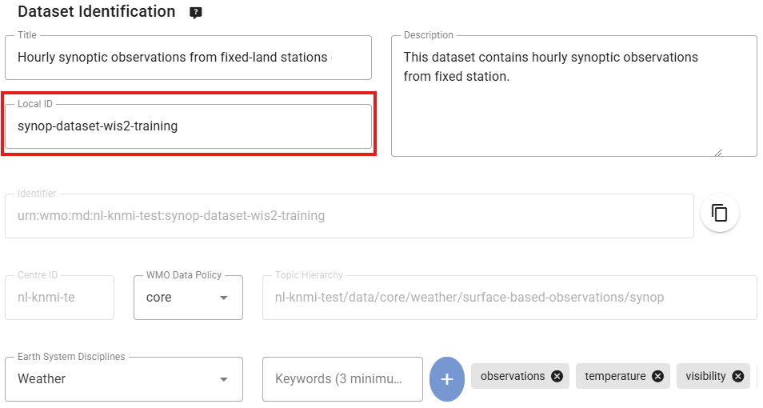
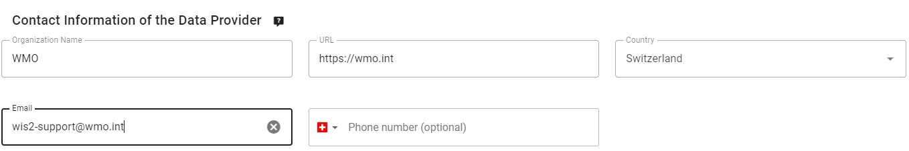
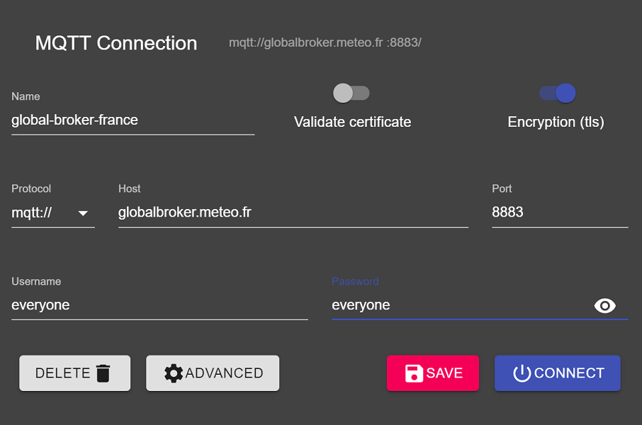
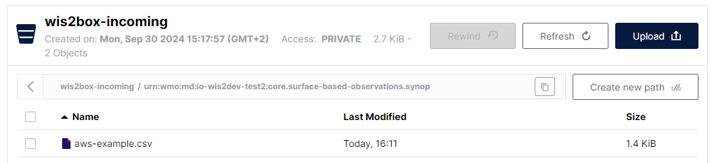
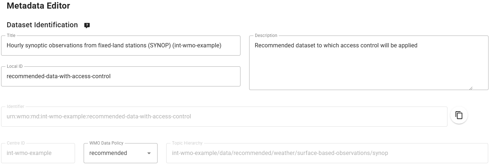
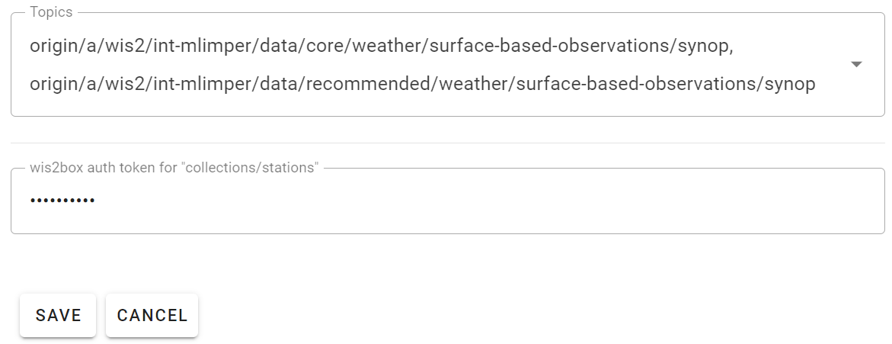

Es

Entrenamiento de "WIS2-in-a-box"
"WIS2-in-a-box" (wis2box) es una Implementación de Referencia de Código Abierto (FOSS) y gratuita de un Nodo WMO WIS2. El proyecto proporciona un conjunto de herramientas plug and play para ingerir, procesar y publicar datos meteorológicos/climáticos/hidrológicos utilizando enfoques basados en estándares alineados con los principios de WIS2. wis2box también proporciona acceso a todos los datos en la red de WIS2. wis2box está diseñado para tener una barrera de entrada baja para los proveedores de datos, ofreciendo infraestructura y servicios habilitadores para la búsqueda, acceso y visualización de datos.
Este entrenamiento proporciona explicaciones paso a paso de varios aspectos del proyecto wis2box, así como una serie de ejercicios para ayudarte a publicar y descargar datos de WIS2. El entrenamiento se proporciona en forma de presentaciones generales y también de ejercicios prácticos.
Los participantes podrán trabajar con datos de prueba y metadatos, así como integrar sus propios datos y metadatos.
Este entrenamiento cubre una amplia gama de temas (instalación/configuración, publicación/descarga de datos, etc.).
Objetivos y resultados de aprendizaje
Los objetivos de este entrenamiento son familiarizarse con lo siguiente:
- Conceptos y componentes centrales de la arquitectura de WIS2
- Formatos de datos y metadatos utilizados en WIS2 para descubrimiento y acceso
- Arquitectura y entorno de wis2box
- Funciones principales de wis2box:
- Gestión de metadatos
- Ingesta de datos y transformación al formato BUFR
- Broker MQTT para la publicación de mensajes de WIS2
- Punto final HTTP para descarga de datos
- Punto final de API para acceso programático a datos
Navegación
La navegación a la izquierda proporciona una tabla de contenido para todo el entrenamiento.
La navegación a la derecha proporciona una tabla de contenido para una página específica.
Requisitos previos
Conocimientos
- Comandos básicos de Linux (consulta la hoja de trucos)
- Conocimientos básicos de redes y protocolos de Internet
Software
Este entrenamiento requiere las siguientes herramientas:
- Una instancia que ejecute el sistema operativo Ubuntu (proporcionado por los instructores de la OMM durante las sesiones de entrenamiento locales) consulta Accediendo a tu VM de estudiante
- Cliente SSH para acceder a tu instancia
- Explorador MQTT en tu máquina local
- Cliente SCP y FTP para copiar archivos desde tu máquina local
Convenciones
Question
Una sección marcada de esta manera te invita a responder una pregunta.
También notarás secciones de consejos y notas dentro del texto:
Tip
Los consejos ofrecen ayuda sobre cómo lograr mejor las tareas.
Note
Las notas proporcionan información adicional sobre el tema cubierto por la sesión práctica, así como la mejor manera de lograr tareas.
Los ejemplos se indican de la siguiente manera:
Configuración
1 2 3 4 | |
Fragmentos que deben escribirse en una terminal/consola se indican como:
echo 'Hello world'
Los nombres de los contenedores (imágenes en ejecución) se indican en negrita.
Ubicación y materiales de entrenamiento
Los contenidos del entrenamiento, la wiki y el rastreador de problemas son gestionados en GitHub en https://github.com/wmo-im/wis2box-training.
Imprimir el material
Este entrenamiento se puede exportar a PDF. Para guardar o imprimir este material de entrenamiento, ve a la página de impresión y selecciona Archivo > Imprimir > Guardar como PDF.
Materiales de ejercicio
Los materiales de ejercicio se pueden descargar desde el archivo exercise-materials.zip zipfile.
Soporte
Para problemas/errores/sugerencias o mejoras/contribuciones a este entrenamiento, utiliza el rastreador de problemas de GitHub.
Todos los errores, mejoras y problemas de wis2box se pueden reportar en GitHub.
Para soporte adicional o preguntas, por favor contacta a wis@wmo.int.
Como siempre, la documentación principal de wis2box siempre se puede encontrar en https://docs.wis2box.wis.wmo.int.
¡Las contribuciones siempre son alentadas y bienvenidas!
Hojas de trucos
Hoja de trucos de Docker
Visión general
Docker permite la creación de entornos virtuales de manera aislada en apoyo de la virtualización de recursos informáticos. El concepto básico detrás de Docker es la contenerización, donde el software puede funcionar como servicios, interactuando con otros contenedores de software, por ejemplo.
El flujo de trabajo típico de Docker implica crear y construir imágenes, que luego se ejecutan como contenedores en vivo.
Docker se utiliza para ejecutar el conjunto de servicios que componen wis2box utilizando imágenes preconstruidas.
Gestión de imágenes
- Listar imágenes disponibles
docker image ls
- Actualizar una imagen:
docker pull my-image:latest
- Eliminar una imagen:
docker rmi my-image:local
Gestión de volúmenes
- Listar todos los volúmenes creados:
docker volume ls
- Mostrar información detallada de un volumen:
docker volume inspect my-volume
- Eliminar un volumen:
docker volume rm my-volume
- Eliminar todos los volúmenes no utilizados:
docker volume prune
Gestión de contenedores
- Mostrar una lista de contenedores actualmente en ejecución:
docker ps
- Lista de todos los contenedores:
docker ps -a
- Entrar al terminal interactivo de un contenedor en ejecución:
Tip
usa docker ps para usar el id del contenedor en el comando a continuación
docker exec -it my-container /bin/bash
- Eliminar un contenedor
docker rm my-container
- Eliminar un contenedor en ejecución:
docker rm -f my-container
Hoja de trucos de Linux
Visión general
Los conceptos básicos para trabajar en un sistema operativo Linux son archivos y directorios (carpetas) organizados en una estructura de árbol dentro de un entorno.
Una vez que inicias sesión en un sistema Linux, estás trabajando en una shell en la que puedes trabajar con archivos y directorios, ejecutando comandos que están instalados en el sistema. La shell Bash es una shell común y popular que se encuentra típicamente en los sistemas Linux.
Bash
Navegación de directorios
- Ingresar a un directorio absoluto:
cd /dir1/dir2
- Ingresar a un directorio relativo:
cd ./somedir
- Subir un directorio:
cd ..
- Subir dos directorios:
cd ../..
- Moverse al directorio "home":
cd -
Gestión de archivos
- Listar archivos en el directorio actual:
ls
- Listar archivos en el directorio actual con más detalle:
ls -l
- Listar la raíz del sistema de archivos:
ls -l /
- Crear un archivo vacío:
touch foo.txt
- Crear un archivo desde un comando
echo:
echo "hola" > archivo-prueba.txt
- Ver el contenido de un archivo:
cat archivo-prueba.txt
- Copiar un archivo:
cp archivo1 archivo2
- Comodines: operar con patrones de archivos:
ls -l arch* # coincide con archivo1 y archivo2
- Concatenar dos archivos en un nuevo archivo llamado
nuevoarchivo:
cat archivo1 archivo2 > nuevoarchivo
- Añadir otro archivo a
nuevoarchivo
cat archivo3 >> nuevoarchivo
- Eliminar un archivo:
rm nuevoarchivo
- Eliminar todos los archivos con la misma extensión de archivo:
rm *.dat
- Crear un directorio
mkdir dir1
Encadenar comandos juntos con tuberías
Las tuberías permiten a un usuario enviar la salida de un comando a otro usando el símbolo de tubería |:
echo "hola" | sed 's/hola/adiós/'
- Filtrar salidas de comandos usando grep:
echo "id,título" > archivo-prueba.txt
echo "1,pájaros" >> archivo-prueba.txt
echo "2,peces" >> archivo-prueba.txt
echo "3,gatos" >> archivo-prueba.txt
cat archivo-prueba.txt | grep peces
- Ignorar mayúsculas y minúsculas:
grep -i PECES archivo-prueba.txt
- Contar líneas coincidentes:
grep -c peces archivo-prueba.txt
- Devolver salidas que no contienen la palabra clave:
grep -v pájaros archivo-prueba.txt
- Contar el número de líneas en
archivo-prueba.txt:
wc -l archivo-prueba.txt
- Mostrar salida una pantalla a la vez:
more archivo-prueba.txt
...con controles:
- Desplazarse hacia abajo línea por línea: enter
- Ir a la siguiente página: barra espaciadora
-
Regresar una página: b
-
Mostrar las primeras 3 líneas del archivo:
head -3 archivo-prueba.txt
- Mostrar las últimas 2 líneas del archivo:
tail -2 archivo-prueba.txt
Hoja de referencia rápida de WIS2 en una caja
Visión general
wis2box se ejecuta como un conjunto de comandos de Docker Compose. El comando wis2box-ctl.py es una utilidad
(escrita en Python) para ejecutar comandos de Docker Compose fácilmente.
Esenciales del comando wis2box
Iniciar y detener
- Iniciar wis2box:
python3 wis2box-ctl.py start
- Detener wis2box:
python3 wis2box-ctl.py stop
- Verificar que todos los contenedores de wis2box estén funcionando:
python3 wis2box-ctl.py status
- Iniciar sesión en un contenedor de wis2box (wis2box-management por defecto):
python3 wis2box-ctl.py login
- Iniciar sesión en un contenedor específico de wis2box:
python3 wis2box-ctl.py login wis2box-api
Csv2bufr templates
Plantilla csv2bufr para Estaciones Meteorológicas Automáticas que reportan datos horarios GBON
La Plantilla AWS utiliza un formato CSV estandarizado para ingresar datos de Estaciones Meteorológicas Automáticas en apoyo a los requisitos de reporte de GBON. Esta plantilla de mapeo convierte datos CSV a la secuencia BUFR 301150, 307096.
El formato está destinado para uso con estaciones meteorológicas automáticas que reportan un número mínimo de parámetros, incluyendo presión, temperatura y humedad del aire, velocidad y dirección del viento y precipitación de manera horaria.
Columnas CSV y descripción
| Column | Units | Data type | Description |
|---|---|---|---|
| wsi_series | Integer | WIGOS identifier series | |
| wsi_issuer | Integer | WIGOS issuer of identifier | |
| wsi_issue_number | Integer | WIGOS issue number | |
| wsi_local | Character | WIGOS local identifier | |
| wmo_block_number | Integer | WMO block number | |
| wmo_station_number | Integer | WMO station number | |
| station_type | Integer | Type of observing station, encoding using code table 0 02 001 (set to 0, automatic) | |
| year | Integer | Year (UTC), the time of observation (based on the actual time the barometer is read) | |
| month | Integer | Month (UTC), the time of observation (based on the actual time the barometer is read) | |
| day | Integer | Day (UTC), the time of observation (based on the actual time the barometer is read) | |
| hour | Integer | Hour (UTC), the time of observation (based on the actual time the barometer is read) | |
| minute | Integer | Minute (UTC), the time of observation (based on the actual time the barometer is read) | |
| latitude | degrees | Decimal | Latitude of the station (to 5 decimal places) |
| longitude | degrees | Decimal | Longitude of the station (to 5 decimal places) |
| station_height_above_msl | meters | Decimal | Height of the station ground above mean sea level (to 1 decimal place) |
| barometer_height_above_msl | meters | Decimal | Height of the barometer above mean sea level (to 1 decimal place), typically height of station ground plus the height of the sensor above local ground |
| station_pressure | Pa | Decimal | Pressure observed at the station level to the nearest 10 pascals |
| msl_pressure | Pa | Decimal | Pressure reduced to mean sea level to the nearest 10 pascals |
| geopotential_height | gpm | Integer | Geoptential height expressed in geopotential meters (gpm) to 0 decimal places |
| thermometer_height | meters | Decimal | Height of thermometer or temperature sensor above the local ground to 2 decimal places |
| air_temperature | Kelvin | Decimal | Instantaneous air temperature to 2 decimal places |
| dewpoint_temperature | Kelvin | Decimal | Instantaneous dewpoint temperature to 2 decimal places |
| relative_humidity | % | Integer | Instantaneous relative humidity to zero decimal places |
| method_of_ground_state_measurement | code table | Integer | Method of observing the state of the ground, encoded using code table 0 02 176 |
| ground_state | code table | Integer | State of the ground encoded using code table 0 20 062 |
| method_of_snow_depth_measurement | code table | Integer | Method of observing the snow depth encoded using code table 0 02 177 |
| snow_depth | meters | Decimal | Snow depth at time of observation to 2 decimal places |
| precipitation_intensity | kg m-2 h-1 | Decimal | Intensity of precipitation at time of observation to 5 decimal places |
| anemometer_height | meters | Decimal | Height of the anemometer above local ground to 2 decimal place |
| time_period_of_wind | minutes | Integer | Defines the time period over which the wind speed and direction have been averaged. Set to -10 to indicate a measurement period over the preceeding 10 minutes. |
| wind_direction | degrees | Integer | Wind direction (at anemometer height) averaged from the caterisan components over the indicated time period, 0 decimal places |
| wind_speed | ms-1 | Decimal | Wind speed (at anemometer height) averaged from the cartesian components over the indicated time period, 1 decimal place |
| maximum_wind_gust_direction_10_minutes | degrees | Integer | Highest 3 second average over the preceeding 10 minutes, 0 decimal places |
| maximum_wind_gust_speed_10_minutes | ms-1 | Decimal | Highest 3 second average over the preceeding 10 minutes, 1 decimal place |
| maximum_wind_gust_direction_1_hour | degrees | Integer | Highest 3 second average over the preceeding hour, 0 decimal places |
| maximum_wind_gust_speed_1_hour | ms-1 | Decimal | Highest 3 second average over the preceeding hour, 1 decimal place |
| maximum_wind_gust_direction_3_hours | degrees | Integer | Highest 3 second average over the preceeding 3 hours, 0 decimal places |
| maximum_wind_gust_speed_3_hours | ms-1 | Decimal | Highest 3 second average over the preceeding 3 hours, 1 decimal place |
| rain_sensor_height | meters | Decimal | Height of the rain gauge above local ground to 2 decimal place |
| total_precipitation_1_hour | kg m-2 | Decimal | Total precipitation over the past hour, 1 decimal place |
| total_precipitation_3_hours | kg m-2 | Decimal | Total precipitation over the past 3 hours, 1 decimal place |
| total_precipitation_6_hours | kg m-2 | Decimal | Total precipitation over the past 6 hours, 1 decimal place |
| total_precipitation_12_hours | kg m-2 | Decimal | Total precipitation over the past 12 hours, 1 decimal place |
| total_precipitation_24_hours | kg m-2 | Decimal | Total precipitation over the past 24 hours, 1 decimal place |
Ejemplo
Archivo CSV de ejemplo que se ajusta a la plantilla AWS: aws-example.csv.
Plantilla csv2bufr para datos climáticos diarios (DAYCLI)
La plantilla DAYCLI proporciona un formato CSV estandarizado para convertir datos climáticos diarios a la secuencia BUFR 307075.
El formato está destinado para su uso con Sistemas de Gestión de Datos Climáticos para publicar datos en WIS2, en apoyo a los requisitos de informes para observaciones climáticas diarias.
Esta plantilla mapea observaciones diarias de:
- Temperatura mínima, máxima y promedio durante un período de 24 horas
- Precipitación total acumulada durante un período de 24 horas
- Profundidad total de la nieve en el momento de la observación
- Profundidad de nieve fresca durante un período de 24 horas
Esta plantilla requiere metadatos adicionales con respecto a la plantilla simplificada de AWS: método de cálculo de la temperatura promedio; alturas del sensor y de la estación; exposición y clasificación de la calidad de la medición.
Acerca de la plantilla DAYCLI
Tenga en cuenta que la secuencia BUFR de DAYCLI se actualizará durante 2025 para incluir información adicional y banderas de control de calidad revisadas. La plantilla DAYCLI incluida en wis2box se actualizará para reflejar estos cambios. La OMM comunicará cuando el software de wis2box se actualice para incluir la nueva plantilla DAYCLI, para permitir a los usuarios actualizar sus sistemas en consecuencia.
Columnas CSV y descripción
| Column | Units | Data Type | Description |
|---|---|---|---|
| wsi_series | Integer | WIGOS Identifier series, set to 0 for stations | |
| wsi_issuer | Integer | WIGOS Identifier issue, ISO 3 digit (number) country code or 20000 series | |
| wsi_issue_number | Integer | WIGOS Identifier issue number | |
| wsi_local | Character | WIGOS Identifier local identifier, alphanumeric, max 16 characters | |
| wmo_block_number | Integer | WMO block number for station 0 - 99 | |
| wmo_station_number | Integer | WMO station number 0 - 999 | |
| latitude | Degrees | Decimal | Latitude of the station (to 5 decimal places) |
| longitude | Degrees | Decimal | Longitude of the station (to 5 decimal places) |
| station_height_above_msl | Meters | Decimal | Height of the station ground above mean sea level (to 1 decimal place) |
| temperature_siting_classification | Integer | Combined sensor siting and measurement quality classification (temperature). See references for siting classification | |
| precipitation_siting_classification | Integer | Combined sensor siting and measurement quality classification (precipitation). See references for siting classification | |
| averaging_method | Integer | Method used to calculate daily average temperature | |
| year | Integer | Year (UTC) of nominal reporting day | |
| month | Integer | Month (UTC) of nominal reporting day | |
| day | Integer | Day (UTC) of month for nominal reporting day | |
| precipitation_day_offset | Integer | Start of reporting period for precipitation, offset in days relative to nominal reporting day (-1 or 0) | |
| precipitation_hour | Integer | Beginning hour (UTC) over which the precipitation is measured | |
| precipitation_minute | Integer | Beginning minute (UTC) over which the precipitation is measured | |
| precipitation_second | Integer | Beginning second (UTC) over which the precipitation is measured | |
| precipitation | kg m-2 | Decimal | Total accumulated precipitation over indicated 24 hour period (kg m-3, equivalent to mm) |
| precipitation_flag | Integer | Quality control flag for total accumulated precipitation | |
| fresh_snow_day_offset | Integer | Start of reporting period for fresh snow depth, offset in days relative to nominal reporting day (-1 or 0) | |
| fresh_snow_hour | Integer | Beginning hour (UTC) over which the fresh snow depth is measured | |
| fresh_snow_minute | Integer | Beginning minute (UTC) over which the fresh snow depth is measured | |
| fresh_snow_second | Integer | Beginning second (UTC) over which the fresh snow depth is measured | |
| fresh_snow_depth | Meters | Decimal | Fresh snow depth over indicated 24 hour period (m, 2 d.p.) |
| fresh_snow_depth_flag | Integer | Quality control flag for the fresh snow depth | |
| total_snow_day_offset | Integer | Start of reporting period for total snow depth, offset in days relative to nominal reporting day (-1 or 0) | |
| total_snow_hour | Integer | Beginning hour (UTC) over which the total snow depth is measured | |
| total_snow_minute | Integer | Beginning minute (UTC) over which the total snow depth is measured | |
| total_snow_second | Integer | Beginning second (UTC) over which the total snow depth is measured | |
| total_snow_depth | Meters | Decimal | Total snow depth over indicated 24 hour period (m, 2 d.p.) |
| total_snow_depth_flag | Integer | Quality control flag for the total snow depth | |
| thermometer_height | Meters | Decimal | Height of thermometer above local ground level (m) |
| maximum_temperature_day_offset | Integer | Start of reporting period for maximum temperature, offset in days relative to nominal reporting day (-1 or 0) | |
| maximum_temperature_hour | Integer | Beginning hour (UTC) over which the maximum temmperature is measured | |
| maximum_temperature_minute | Integer | Beginning minute (UTC) over which the maximum temperature is measured | |
| maximum_temperature_second | Integer | Beginning second (UTC) over which the maximum temperature is measured | |
| maximum_temperature | Kelvin | Decimal | Maximum temperature over indicated 24 hour period (K, 2 d.p.) |
| maximum_temperature_flag | Integer | Quality control flag for the maximum temperature | |
| minimum_temperature_day_offset | Integer | Start of reporting period for minimum temperature, offset in days relative to nominal reporting day (-1 or 0) | |
| minimum_temperature_hour | Integer | Beginning hour (UTC) over which the minimum temmperature is measured | |
| minimum_temperature_minute | Integer | Beginning minute (UTC) over which the minimum temperature is measured | |
| minimum_temperature_second | Integer | Beginning second (UTC) over which the minimum temperature is measured | |
| minimum_temperature | Kelvin | Decimal | Minimum temperature over indicated 24 hour period (K, 2 d.p.) |
| minimum_temperature_flag | Integer | Quality control flag for the minimum temperature | |
| average_temperature_day_offset | Integer | Start of reporting period for average temperature, offset in days relative to nominal reporting day (-1 or 0) | |
| average_temperature_hour | Integer | Beginning hour (UTC) over which the average temmperature is measured | |
| average_temperature_minute | Integer | Beginning minute (UTC) over which the average temperature is measured | |
| average_temperature_second | Integer | Beginning second (UTC) over which the average temperature is measured | |
| average_temperature | Kelvin | Decimal | Average temperature over indicated 24 hour period (K, 2 d.p.) |
| average_temperature_flag | Integer | Quality control flag for the average temperature |
Método de promedio
| Integer | Description |
|---|---|
| 0 | Average of minimum and maximum temperatures |
| 1 | Average of 8 tri-hourly observations |
| 2 | Average of 24 hourly observations |
| 3 | Weighted average of three observations |
| 4 | Weighted average of three observations, as well as the minimum and maximum values |
| 5 | AWS complete integration from minute data |
| 6 | Average of 4 six-hourly observations |
Bandera de calidad
| Integer | Description |
|---|---|
| 0 | Data checked and declared good |
| 1 | Data checked and declared suspect |
| 2 | Data checked and declared aggregated |
| 3 | Data checked and declared out of instrument range |
| 4 | Data checked and declared aggregated and out of instrument range |
| 5 | Parameter is not measured at the station |
| 6 | Daily value not provided |
| 7 | Data unchecked |
Referencias para la clasificación de ubicación
Referencia para "clasificación de ubicación de temperatura".
Referencia para "clasificación de ubicación de precipitación".
Ejemplo
Archivo CSV de ejemplo que se ajusta a la plantilla DAYCLI: daycli-example.csv.
Sesiones prácticas
Accediendo a tu VM de estudiante
Resultados de aprendizaje
Al final de esta sesión práctica, serás capaz de:
- acceder a tu VM de estudiante mediante SSH y WinSCP
- verificar que el software necesario para los ejercicios prácticos esté instalado
- verificar que tienes acceso a los materiales de los ejercicios para esta capacitación en tu VM de estudiante local
Introducción
Como parte de las sesiones de capacitación de wis2box que se realizan localmente, puedes acceder a tu VM de estudiante personal en la red de entrenamiento local denominada "WIS2-training".
Tu VM de estudiante tiene el siguiente software preinstalado:
- Ubuntu 22.0.4.3 LTS ubuntu-22.04.3-live-server-amd64.iso
- Python 3.10.12
- Docker 24.0.6
- Docker Compose 2.21.0
- Editores de texto: vim, nano
Note
Si deseas realizar esta capacitación fuera de una sesión de entrenamiento local, puedes proporcionar tu propia instancia utilizando cualquier proveedor de nube, por ejemplo:
- Instancia VM de GCP (Google Cloud Platform)
e2-medium - Instancia ec2 de AWS (Amazon Web Services)
t3a.medium - Máquina Virtual de Azure (Microsoft)
standard_b2s
Selecciona Ubuntu Server 22.0.4 LTS como sistema operativo.
Después de crear tu VM, asegúrate de haber instalado python, docker y docker compose, como se describe en wis2box-software-dependencies.
El archivo de lanzamiento para wis2box utilizado en esta capacitación se puede descargar de la siguiente manera:
wget https://github.com/wmo-im/wis2box/releases/download/1.0.0rc1/wis2box-setup-1.0.0rc1.zip
unzip wis2box-setup-1.0.0rc1.zip
Siempre puedes encontrar el último archivo de configuración de 'wis2box-setup' en https://github.com/wmo-im/wis2box/releases.
El material de ejercicio utilizado en esta capacitación se puede descargar de la siguiente manera:
wget https://training.wis2box.wis.wmo.int/exercise-materials.zip
unzip exercise-materials.zip
Los siguientes paquetes adicionales de Python son necesarios para ejecutar los materiales de ejercicio:
pip3 install minio
Si estás utilizando la VM de estudiante proporcionada durante las sesiones locales de entrenamiento WIS2, el software requerido ya estará instalado.
Conéctate a tu VM de estudiante en la red de entrenamiento local
Conecta tu PC a la red Wi-Fi local transmitida en la sala durante el entrenamiento WIS2 según las instrucciones proporcionadas por el entrenador.
Usa un cliente SSH para conectarte a tu VM de estudiante utilizando lo siguiente:
- Host: (proporcionado durante la capacitación presencial)
- Puerto: 22
- Nombre de usuario: (proporcionado durante la capacitación presencial)
- Contraseña: (proporcionado durante la capacitación presencial)
Tip
Contacta a un entrenador si tienes dudas sobre el nombre del host/usuario o si tienes problemas para conectarte.
Una vez conectado, por favor cambia tu contraseña para asegurar que otros no puedan acceder a tu VM:
limper@student-vm:~$ passwd
Cambiando la contraseña para testuser.
Contraseña actual:
Nueva contraseña:
Repite la nueva contraseña:
passwd: contraseña actualizada correctamente
Verifica las versiones de software
Para poder ejecutar wis2box, la VM de estudiante debería tener Python, Docker y Docker Compose preinstalados.
Verifica la versión de Python:
python3 --version
Python 3.10.12
Verifica la versión de docker:
docker --version
Versión de Docker 24.0.6, build ed223bc
Verifica la versión de Docker Compose:
docker compose version
Versión de Docker Compose v2.21.0
Para asegurar que tu usuario pueda ejecutar comandos de Docker, tu usuario ha sido añadido al grupo docker.
Para probar que tu usuario puede ejecutar docker hello-world, ejecuta el siguiente comando:
docker run hello-world
Esto debería descargar la imagen hello-world y ejecutar un contenedor que imprime un mensaje.
Verifica que veas lo siguiente en la salida:
...
¡Hola desde Docker!
Este mensaje muestra que tu instalación parece estar funcionando correctamente.
...
Inspecciona los materiales de ejercicio
Inspecciona los contenidos de tu directorio home; estos son los materiales utilizados como parte de la capacitación y las sesiones prácticas.
ls ~/
exercise-materials wis2box-1.0.0rc1
Si tienes WinSCP instalado en tu PC local, puedes usarlo para conectarte a tu VM de estudiante e inspeccionar los contenidos de tu directorio home y descargar o subir archivos entre tu VM y tu PC local.
WinSCP no es necesario para la capacitación, pero puede ser útil si deseas editar archivos en tu VM usando un editor de texto en tu PC local.
Aquí te mostramos cómo puedes conectarte a tu VM de estudiante usando WinSCP:
Abre WinSCP y haz clic en "Nuevo sitio". Puedes crear una nueva conexión SCP a tu VM de la siguiente manera:

Haz clic en 'Guardar' y luego en 'Conectar' para conectarte a tu VM.
Y deberías poder ver el siguiente contenido:

Conclusión
¡Felicidades!
En esta sesión práctica, aprendiste cómo:
- acceder a tu VM de estudiante mediante SSH y WinSCP
- verificar que el software necesario para los ejercicios prácticos esté instalado
- verificar que tienes acceso a los materiales de los ejercicios para esta capacitación en tu VM de estudiante local
Añadiendo encabezados GTS a las notificaciones WIS2
Resultados de aprendizaje
Al final de esta sesión práctica, serás capaz de:
- configurar un mapeo entre el nombre del archivo y los encabezados GTS
- ingerir datos con un nombre de archivo que coincida con los encabezados GTS
- ver los encabezados GTS en las notificaciones WIS2
Introducción
Los miembros de la OMM que deseen detener su transmisión de datos en el GTS durante la fase de transición a WIS2 necesitarán añadir encabezados GTS a sus notificaciones WIS2. Estos encabezados permiten que la puerta de enlace de WIS2 a GTS reenvíe los datos a la red GTS.
Esto permite a los miembros que han migrado a usar un nodo WIS2 para la publicación de datos desactivar su sistema MSS y asegurar que sus datos sigan estando disponibles para los miembros que aún no han migrado a WIS2.
La propiedad GTS en el Mensaje de Notificación WIS2 necesita ser añadida como una propiedad adicional al Mensaje de Notificación WIS2. La propiedad GTS es un objeto JSON que contiene los encabezados GTS que se requieren para que los datos sean reenviados a la red GTS.
{
"gts": {
"ttaaii": "FTAE31",
"cccc": "VTBB"
}
}
Dentro de wis2box puedes añadir esto a las Notificaciones WIS2 automáticamente proporcionando un archivo adicional llamado gts_headers_mapping.csv que contiene la información requerida para mapear los encabezados GTS a los nombres de archivos entrantes.
Este archivo debe ser colocado en el directorio definido por WIS2BOX_HOST_DATADIR en tu wis2box.env y debe tener las siguientes columnas:
string_in_filepath: una cadena que es parte del nombre del archivo que se utilizará para coincidir con los encabezados GTSTTAAii: el encabezado TTAAii que se añadirá a la notificación WIS2CCCC: el encabezado CCCC que se añadirá a la notificación WIS2
Preparación
Asegúrate de tener acceso SSH a tu VM de estudiante y que tu instancia de wis2box esté funcionando.
Asegúrate de estar conectado al broker MQTT de tu instancia de wis2box usando MQTT Explorer. Puedes usar las credenciales públicas everyone/everyone para conectarte al broker.
Asegúrate de tener un navegador web abierto con el tablero de Grafana para tu instancia yendo a http://<tu-host>:3000
Creando gts_headers_mapping.csv
Para añadir encabezados GTS a tus notificaciones WIS2, se requiere un archivo CSV que mapee los encabezados GTS a los nombres de archivos entrantes.
El archivo CSV debe ser nombrado (exactamente) gts_headers_mapping.csv y debe ser colocado en el directorio definido por WIS2BOX_HOST_DATADIR en tu wis2box.env.
Ejercicio 1: proporcionando un archivo gts_headers_mapping.csv
Copia el archivo exercise-materials/gts-headers-exercises/gts_headers_mapping.csv a tu instancia de wis2box y colócalo en el directorio definido por WIS2BOX_HOST_DATADIR en tu wis2box.env.
cp ~/exercise-materials/gts-headers-exercises/gts_headers_mapping.csv ~/wis2box-data
Luego reinicia el contenedor de gestión de wis2box para aplicar los cambios:
docker restart wis2box-management
Ejercicio 2: Ingeriendo datos con encabezados GTS
Copia el archivo exercise-materials/gts-headers-exercises/A_SMRO01YRBK171200_C_EDZW_20240717120502.txt al directorio definido por WIS2BOX_HOST_DATADIR en tu wis2box.env:
cp ~/exercise-materials/gts-headers-exercises/A_SMRO01YRBK171200_C_EDZW_20240717120502.txt ~/wis2box-data
Luego inicia sesión en el contenedor wis2box-management:
cd ~/wis2box-1.0.0rc1
python3 wis2box-ctl.py login
Desde la línea de comandos de wis2box podemos ingerir el archivo de datos de muestra A_SMRO01YRBK171200_C_EDZW_20240717120502.txt en un conjunto de datos específico de la siguiente manera:
wis2box data ingest -p /data/wis2box/A_SMRO01YRBK171200_C_EDZW_20240717120502.txt --metadata-id urn:wmo:md:not-my-centre:core.surface-based-observations.synop
Asegúrate de reemplazar la opción metadata-id con el identificador correcto para tu conjunto de datos.
Revisa el tablero de Grafana para ver si los datos fueron ingeridos correctamente. Si ves algún AVISO o ERROR, intenta solucionarlo y repite el comando wis2box data ingest.
Ejercicio 3: Viendo los encabezados GTS en la Notificación WIS2
Ve al MQTT Explorer y busca el Mensaje de Notificación WIS2 para los datos que acabas de ingerir.
El Mensaje de Notificación WIS2 debería contener los encabezados GTS que proporcionaste en el archivo gts_headers_mapping.csv.
Conclusión
¡Felicidades!
En esta sesión práctica, aprendiste cómo: - añadir encabezados GTS a tus notificaciones WIS2 - verificar que los encabezados GTS están disponibles a través de tu instalación de wis2box
Automatización de la ingestión de datos
Resultados de aprendizaje
Al final de esta sesión práctica, serás capaz de:
- entender cómo los plugins de datos de tu conjunto de datos determinan el flujo de trabajo de ingestión de datos
- ingresar datos en wis2box usando un script con el cliente Python de MinIO
- ingresar datos en wis2box accediendo a MinIO a través de SFTP
Introducción
El contenedor wis2box-management escucha eventos del servicio de almacenamiento MinIO para activar la ingestión de datos basada en los plugins de datos configurados para tu conjunto de datos. Esto te permite subir datos al bucket de MinIO y activar el flujo de trabajo de wis2box para publicar datos en el broker WIS2.
Los plugins de datos definen los módulos de Python que son cargados por el contenedor wis2box-management y determinan cómo se transforman y publican los datos.
En el ejercicio anterior deberías haber creado un conjunto de datos usando la plantilla surface-based-observations/synop que incluía los siguientes plugins de datos:

Cuando se sube un archivo a MinIO, wis2box coincidirá el archivo con un conjunto de datos cuando la ruta del archivo contenga el id del conjunto de datos (metadata_id) y determinará los plugins de datos a usar basándose en la extensión del archivo y el patrón de archivo definido en los mapeos del conjunto de datos.
En las sesiones anteriores, activamos el flujo de trabajo de ingestión de datos usando la funcionalidad de línea de comandos de wis2box, que sube datos al almacenamiento de MinIO en la ruta correcta.
Los mismos pasos se pueden realizar programáticamente usando cualquier software cliente de MinIO o S3, permitiéndote automatizar tu ingestión de datos como parte de tus flujos de trabajo operativos.
Alternativamente, también puedes acceder a MinIO usando el protocolo SFTP para subir datos y activar el flujo de trabajo de ingestión de datos.
Preparación
Inicia sesión en tu VM de estudiante usando tu cliente SSH (PuTTY u otro).
Asegúrate de que wis2box está funcionando:
cd ~/wis2box-1.0.0rc1/
python3 wis2box-ctl.py start
python3 wis2box-ctl.py status
Asegúrate de que MQTT Explorer está funcionando y conectado a tu instancia. Si todavía estás conectado desde la sesión anterior, borra cualquier mensaje anterior que puedas haber recibido de la cola. Esto se puede hacer desconectándote y reconectándote o haciendo clic en el icono del cubo de basura para el tema dado.
Asegúrate de tener un navegador web abierto con el tablero de Grafana para tu instancia yendo a http://<tu-host>:3000
Y asegúrate de tener una segunda pestaña abierta con la interfaz de usuario de MinIO en http://<tu-host>:9001. Recuerda que necesitas iniciar sesión con el WIS2BOX_STORAGE_USER y WIS2BOX_STORAGE_PASSWORD definidos en tu archivo wis2box.env.
Ejercicio 1: configurar un script de Python para ingresar datos en MinIO
En este ejercicio usaremos el cliente Python de MinIO para copiar datos en MinIO.
MinIO proporciona un cliente Python que se puede instalar de la siguiente manera:
pip3 install minio
En tu VM de estudiante el paquete 'minio' para Python ya estará instalado.
Ve al directorio exercise-materials/data-ingest-exercises; este directorio contiene un script de muestra copy_file_to_incoming.py que usa el cliente Python de MinIO para copiar un archivo en MinIO.
Intenta ejecutar el script para copiar el archivo de datos de muestra csv-aws-example.csv en el bucket wis2box-incoming en MinIO de la siguiente manera:
cd ~/exercise-materials/data-ingest-exercises
python3 copy_file_to_incoming.py csv-aws-example.csv
Note
Obtendrás un error ya que el script no está configurado para acceder al punto final de MinIO en tu wis2box aún.
El script necesita conocer el punto final correcto para acceder a MinIO en tu wis2box. Si wis2box está ejecutándose en tu host, el punto final de MinIO está disponible en http://<tu-host>:9000. El script también necesita ser actualizado con tu contraseña de almacenamiento y la ruta en el bucket de MinIO para almacenar los datos.
Actualiza el script e ingresa los datos CSV
Edita el script copy_file_to_incoming.py para corregir los errores, utilizando uno de los siguientes métodos:
- Desde la línea de comandos: usa el editor de texto nano o vim para editar el script
- Usando WinSCP: inicia una nueva conexión usando el Protocolo de Archivo SCP y las mismas credenciales que tu cliente SSH. Navega al directorio exercise-materials/data-ingest-exercises y edita copy_file_to_incoming.py usando el editor de texto incorporado
Asegúrate de:
- definir el punto final correcto de MinIO para tu host
- proporcionar la contraseña de almacenamiento correcta para tu instancia de MinIO
- proporcionar la ruta correcta en el bucket de MinIO para almacenar los datos
Vuelve a ejecutar el script para ingresar el archivo de datos de muestra csv-aws-example.csv en MinIO:
python3 copy_file_to_incoming.py csv-aws-example.csv
Y asegúrate de que los errores estén resueltos.
Puedes verificar que los datos se subieron correctamente revisando la interfaz de usuario de MinIO y viendo si los datos de muestra están disponibles en el directorio correcto en el bucket wis2box-incoming.
Puedes usar el tablero de Grafana para verificar el estado del flujo de trabajo de ingestión de datos.
Finalmente, puedes usar MQTT Explorer para verificar si se publicaron notificaciones para los datos que ingresaste. Deberías ver que los datos CSV fueron transformados al formato BUFR y que se publicó una notificación de datos WIS2 con una URL "canónica" para habilitar la descarga de los datos BUFR.
Ejercicio 2: Ingestión de datos binarios
A continuación, intentaremos ingresar datos binarios en formato BUFR usando el cliente Python de MinIO.
wis2box puede ingresar datos binarios en formato BUFR usando el plugin wis2box.data.bufr4.ObservationDataBUFR incluido en wis2box.
Este plugin dividirá el archivo BUFR en mensajes BUFR individuales y publicará cada mensaje en el broker MQTT. Si la estación para el mensaje BUFR correspondiente no está definida en los metadatos de la estación de wis2box, el mensaje no será publicado.
Dado que usaste la plantilla surface-based-observations/synop en la sesión anterior, tus mapeos de datos incluyen el plugin FM-12 data converted to BUFR para los mapeos del conjunto de datos. Este plugin carga el módulo wis2box.data.synop2bufr.ObservationDataSYNOP2BUFR para ingresar los datos.
Ingestión de datos binarios en formato BUFR
Ejecuta el siguiente comando para copiar el archivo de datos binarios bufr-example.bin en el bucket wis2box-incoming en MinIO:
python3 copy_file_to_incoming.py bufr-example.bin
Revisa el tablero de Grafana y MQTT Explorer para ver si los datos de prueba fueron ingresados y publicados con éxito y si ves algún error, intenta resolverlo.
Verifica la ingestión de datos
¿Cuántos mensajes fueron publicados en el broker MQTT para esta muestra de datos?
Haz clic para revelar la respuesta
Si ingresaste y publicaste con éxito la última muestra de datos, deberías haber recibido 10 nuevas notificaciones en el broker MQTT de wis2box. Cada notificación corresponde a datos para una estación para una marca de tiempo de observación.
El plugin wis2box.data.bufr4.ObservationDataBUFR divide el archivo BUFR en mensajes BUFR individuales y publica un mensaje para cada estación y marca de tiempo de observación.
Ejercicio 3: Ingestión de datos SYNOP en formato ASCII
En la sesión anterior usamos el formulario SYNOP en la wis2box-webapp para ingresar datos SYNOP en formato ASCII. También puedes ingresar datos SYNOP en formato ASCII subiéndolos a MinIO.
En la sesión anterior deberías haber creado un conjunto de datos que incluyera el plugin 'FM-12 data converted to BUFR' para los mapeos del conjunto de datos:
Este plugin carga el módulo wis2box.data.synop2bufr.ObservationDataSYNOP2BUFR para ingresar los datos.
Intenta usar el cliente Python de MinIO para ingresar los datos de prueba synop-202307.txt y synop-202308.txt en tu instancia de wis2box.
Ten en cuenta que los 2 archivos contienen el mismo contenido, pero el nombre del archivo es diferente. El nombre del archivo se utiliza para determinar la fecha de la muestra de datos.
El plugin synop2bufr depende de un patrón de archivo para extraer la fecha del nombre del archivo. El primer grupo en la expresión regular se utiliza para extraer el año y el segundo grupo se utiliza para extraer el mes.
Ingesta de datos SYNOP FM-12 en formato ASCII
Regresa a la interfaz de MinIO en tu navegador y navega al bucket wis2box-incoming y al camino donde subiste los datos de prueba en el ejercicio anterior.
Sube los nuevos archivos en el camino correcto en el bucket wis2box-incoming en MinIO para activar el flujo de trabajo de ingestión de datos.
Revisa el tablero de Grafana y MQTT Explorer para ver si los datos de prueba fueron ingresados y publicados con éxito.
¿Cuál es la diferencia en el properties.datetime entre los dos mensajes publicados en el broker MQTT?
Haz clic para revelar la respuesta
Revisa las propiedades de las últimas 2 notificaciones en MQTT Explorer y notarás que una notificación tiene:
"properties": {
"data_id": "wis2/urn:wmo:md:nl-knmi-test:surface-based-observations.synop/WIGOS_0-20000-0-60355_20230703T090000",
"datetime": "2023-07-03T09:00:00Z",
...
y la otra notificación tiene:
"properties": {
"data_id": "wis2/urn:wmo:md:nl-knmi-test:surface-based-observations.synop/WIGOS_0-20000-0-60355_20230803T09:00:00Z",
...
El nombre del archivo fue utilizado para determinar el año y el mes de la muestra de datos.
Ejercicio 4: Ingestión de datos en MinIO usando SFTP
Los datos también pueden ser ingresados en MinIO a través de SFTP.
El servicio MinIO habilitado en el stack de wis2box tiene SFTP habilitado en el puerto 8022. Puedes acceder a MinIO a través de SFTP usando las mismas credenciales que para la interfaz de usuario de MinIO. En este ejercicio usaremos las credenciales de administrador para el servicio MinIO como se define en wis2box.env, pero también puedes crear usuarios adicionales en la interfaz de usuario de MinIO.
Para acceder a MinIO a través de SFTP puedes usar cualquier software cliente SFTP. En este ejercicio usaremos WinSCP, que es un cliente SFTP gratuito para Windows.
Usando WinSCP, tu conexión se vería de la siguiente manera:

Para el nombre de usuario y contraseña, usa los valores de las variables de entorno WIS2BOX_STORAGE_USERNAME y WIS2BOX_STORAGE_PASSWORD de tu archivo wis2box.env. Haz clic en 'guardar' para guardar la sesión y luego en 'iniciar sesión' para conectar.
Cuando inicies sesión verás el bucket wis2box-incoming y wis2box-public en el directorio raíz. Puedes subir datos al bucket wis2box-incoming para activar el flujo de trabajo de ingestión de datos.
Haz clic en el bucket wis2box-incoming para navegar a este bucket, luego haz clic derecho y selecciona Nuevo->Directorio para crear un nuevo directorio en el bucket wis2box-incoming.
Crea el directorio not-a-valid-path y sube el archivo randomfile.txt en este directorio (puedes usar cualquier archivo que desees).
Luego revisa el tablero de Grafana en el puerto 3000 para ver si se activó el flujo de trabajo de ingestión de datos. Deberías ver:
ERROR - Error de validación de ruta: No se pudo coincidir http://minio:9000/wis2box-incoming/not-a-valid-path/randomfile.txt con el conjunto de datos, la ruta debería incluir uno de los siguientes: ...
El error indica que el archivo fue subido a MinIO y se activó el flujo de trabajo de ingestión de datos, pero dado que la ruta no coincide con ningún conjunto de datos en la instancia de wis2box, el mapeo de datos falló.
También puedes usar sftp desde la línea de comandos:
sftp -P 8022 -oBatchMode=no -o StrictHostKeyChecking=no <mi-hostname-o-ip>
wis2box.env para las variables de entorno WIS2BOX_STORAGE_USERNAME y WIS2BOX_STORAGE_PASSWORD, navega al bucket wis2box-incoming y luego crea un directorio y sube un archivo de la siguiente manera:
cd wis2box-incoming
mkdir not-a-valid-path
cd not-a-valid-path
put ~/exercise-materials/data-ingest-exercises/synop.txt .
Esto resultará en un "Error de validación de ruta" en el tablero de Grafana indicando que el archivo fue subido a MinIO.
Para salir del cliente sftp, escribe exit.
Ingesta de datos en MinIO usando SFTP
Intenta ingresar el archivo synop.txt en tu instancia de wis2box usando SFTP para activar el flujo de trabajo de ingestión de datos.
Revisa la interfaz de usuario de MinIO para ver si el archivo fue subido al camino correcto en el bucket wis2box-incoming.
Revisa el tablero de Grafana para ver si se activó el flujo de trabajo de ingestión de datos o si hubo algún error.
Para asegurarte de que tus datos se ingieren correctamente, asegúrate de que el archivo se suba en el bucket wis2box-incoming en un directorio que coincida con el id del conjunto de datos o el tema de tu conjunto de datos.
Conclusión
¡Felicidades!
En esta sesión práctica, aprendiste cómo:
- activar el flujo de trabajo de wis2box usando un script de Python y el cliente Python de MinIO
- usar diferentes plugins de datos para ingresar diferentes formatos de datos
- subir datos a MinIO usando SFTP
Trabajando con datos BUFR
Resultados de aprendizaje
En esta sesión práctica se te introducirá a algunas de las herramientas BUFR incluidas en el contenedor wis2box-api que se utilizan para transformar datos al formato BUFR y para leer el contenido codificado en BUFR.
Aprenderás:
- cómo inspeccionar los encabezados en el archivo BUFR usando el comando
bufr_ls - cómo extraer e inspeccionar los datos dentro de un archivo bufr usando
bufr_dump - la estructura básica de las plantillas bufr utilizadas en csv2bufr y cómo usar la herramienta de línea de comandos
- y cómo hacer cambios básicos a las plantillas bufr y cómo actualizar el wis2box para usar la versión revisada
Introducción
Los complementos que producen notificaciones con datos BUFR utilizan procesos en el wis2box-api para trabajar con datos BUFR, por ejemplo para transformar los datos de CSV a BUFR o de BUFR a geojson.
El contenedor wis2box-api incluye varias herramientas para trabajar con datos BUFR.
Estas incluyen las herramientas desarrolladas por ECMWF e incluidas en el software ecCodes, más información sobre estas se puede encontrar en el sitio web de ecCodes.
En esta sesión se te introducirá a los comandos bufr_ls y bufr_dump del paquete de software ecCodes y a la configuración avanzada de la herramienta csv2bufr.
Preparación
Para usar las herramientas de línea de comandos BUFR necesitarás estar conectado al contenedor wis2box-api y a menos que se especifique lo contrario todos los comandos deben ejecutarse en este contenedor. También necesitarás tener MQTT Explorer abierto y conectado a tu broker.
Primero conéctate a tu VM de estudiante a través de tu cliente ssh y luego inicia sesión en el contenedor wis2box-api:
cd ~/wis2box-1.0.0rc1
python3 wis2box-ctl.py login wis2box-api
Confirma que las herramientas están disponibles, comenzando con ecCodes:
bufr_dump -V
ecCodes Version 2.28.0
Luego verifica csv2bufr:
csv2bufr --version
Deberías obtener la siguiente respuesta:
csv2bufr, versión 0.7.4
Finalmente, crea un directorio de trabajo para trabajar en él:
cd /data/wis2box
mkdir -p working/bufr-cli
cd working/bufr-cli
Ahora estás listo para comenzar a usar las herramientas BUFR.
Uso de las herramientas de línea de comandos BUFR
Ejercicio 1 - bufr_ls
En este primer ejercicio usarás el comando bufr_ls para inspeccionar los encabezados de un archivo BUFR y determinar el contenido del archivo. Los siguientes encabezados están incluidos en un archivo BUFR:
| encabezado | clave de ecCodes | descripción |
|---|---|---|
| centro originador/generador | centre | El centro originador / generador de los datos |
| subcentro originador/generador | bufrHeaderSubCentre | El subcentro originador / generador de los datos |
| Número de secuencia de actualización | updateSequenceNumber | Si esta es la primera versión de los datos (0) o una actualización (>0) |
| Categoría de datos | dataCategory | El tipo de datos contenidos en el mensaje BUFR, por ejemplo, datos de superficie. Ver Tabla A de BUFR |
| Subcategoría de datos internacionales | internationalDataSubCategory | El subtipo de datos contenidos en el mensaje BUFR, por ejemplo, datos de superficie. Ver Tabla de Códigos Comunes C-13 |
| Año | typicalYear (typicalDate) | El tiempo más típico para los contenidos del mensaje BUFR |
| Mes | typicalMonth (typicalDate) | El tiempo más típico para los contenidos del mensaje BUFR |
| Día | typicalDay (typicalDate) | El tiempo más típico para los contenidos del mensaje BUFR |
| Hora | typicalHour (typicalTime) | El tiempo más típico para los contenidos del mensaje BUFR |
| Minuto | typicalMinute (typicalTime) | El tiempo más típico para los contenidos del mensaje BUFR |
| Descriptores BUFR | unexpandedDescriptors | Lista de uno o más descriptores BUFR que definen los datos contenidos en el archivo |
Descarga el archivo de ejemplo directamente en el contenedor de gestión de wis2box usando el siguiente comando:
curl https://training.wis2box.wis.wmo.int/sample-data/bufr-cli-ex1.bufr4 --output bufr-cli-ex1.bufr4
Ahora usa el siguiente comando para ejecutar bufr_ls en este archivo:
bufr_ls bufr-cli-ex1.bufr4
Deberías ver la siguiente salida:
bufr-cli-ex1.bufr4
centre masterTablesVersionNumber localTablesVersionNumber typicalDate typicalTime numberOfSubsets
cnmc 29 0 20231002 000000 1
1 of 1 messages in bufr-cli-ex1.bufr4
1 of 1 total messages in 1 files
Por sí sola, esta información no es muy informativa, ya que solo proporciona información limitada sobre el contenido del archivo.
La salida predeterminada no proporciona información sobre el tipo de observación o datos y está en un formato que no es muy fácil de leer. Sin embargo, se pueden pasar varias opciones a bufr_ls para cambiar tanto el formato como los campos de encabezado impresos.
Usa bufr_ls sin ningún argumento para ver las opciones:
bufr_ls
Deberías ver la siguiente salida:
NAME bufr_ls
DESCRIPTION
List content of BUFR files printing values of some header keys.
Only scalar keys can be printed.
It does not fail when a key is not found.
USAGE
bufr_ls [options] bufr_file bufr_file ...
OPTIONS
-p key[:{s|d|i}],key[:{s|d|i}],...
Declaration of keys to print.
For each key a string (key:s), a double (key:d) or an integer (key:i)
type can be requested. Default type is string.
-F format
C style format for floating-point values.
-P key[:{s|d|i}],key[:{s|d|i}],...
As -p adding the declared keys to the default list.
-w key[:{s|d|i}]{=|!=}value,key[:{s|d|i}]{=|!=}value,...
Where clause.
Messages are processed only if they match all the key/value constraints.
A valid constraint is of type key=value or key!=value.
For each key a string (key:s), a double (key:d) or an integer (key:i)
type can be specified. Default type is string.
In the value you can also use the forward-slash character '/' to specify an OR condition (i.e. a logical disjunction)
Note: only one -w clause is allowed.
-j JSON output
-s key[:{s|d|i}]=value,key[:{s|d|i}]=value,...
Key/values to set.
For each key a string (key:s), a double (key:d) or an integer (key:i)
type can be defined. By default the native type is set.
-n namespace
All the keys belonging to the given namespace are printed.
-m Mars keys are printed.
-V Version.
-W width
Minimum width of each column in output. Default is 10.
-g Copy GTS header.
-7 Does not fail when the message has wrong length
SEE ALSO
Full documentation and examples at:
<https://confluence.ecmwf.int/display/ECC/bufr_ls>
Ahora ejecuta el mismo comando en el archivo de ejemplo pero muestra la información en formato JSON.
Question
¿Qué bandera pasas al comando bufr_ls para ver la salida en formato JSON?
Haz clic para revelar la respuesta
Puedes cambiar el formato de salida a json usando la bandera -j, es decir,
bufr_ls -j <archivo-de-entrada>. Esto puede ser más legible que el formato de salida predeterminado. Vea el ejemplo de salida a continuación:
{ "messages" : [
{
"centre": "cnmc",
"masterTablesVersionNumber": 29,
"localTablesVersionNumber": 0,
"typicalDate": 20231002,
"typicalTime": "000000",
"numberOfSubsets": 1
}
]}
Al examinar un archivo BUFR, a menudo queremos determinar el tipo de datos contenidos en el archivo y la fecha/hora típica de los datos en el archivo. Esta información se puede listar usando la bandera -p para seleccionar los encabezados a mostrar. Se pueden incluir múltiples encabezados usando una lista separada por comas.
Usando el comando bufr_ls, inspecciona el archivo de prueba e identifica el tipo de datos contenidos en el archivo y la fecha y hora típicas para esos datos.
Hint
Las claves ecCodes están dadas en la tabla anterior. Podemos usar lo siguiente para listar la dataCategory y internationalDataSubCategory de los datos BUFR:
bufr_ls -p dataCategory,internationalDataSubCategory bufr-cli-ex1.bufr4
Se pueden agregar claves adicionales según sea necesario.
Question
¿Qué tipo de datos (categoría de datos y subcategoría) están contenidos en el archivo? ¿Cuál es la fecha y hora típicas para los datos?
Haz clic para revelar la respuesta
El comando que necesitabas ejecutar debería haber sido similar a:
bufr_ls -p dataCategory,internationalDataSubCategory,typicalDate,typicalTime -j bufr-cli-ex1.bufr4
Es posible que hayas agregado claves adicionales o listado el año, mes, día, etc. individualmente. La salida debería ser similar a la siguiente, dependiendo de si seleccionaste la salida JSON o la predeterminada.
{ "messages" : [
{
"dataCategory": 2,
"internationalDataSubCategory": 4,
"typicalDate": 20231002,
"typicalTime": "000000"
}
]}
De esto vemos que:
- La categoría de datos es 2, de Tabla A de BUFR podemos ver que este archivo contiene datos de "sondeos verticales (otros que no son de satélite)".
- La subcategoría internacional es 4, indicando "informes de temperatura/humedad/viento de nivel superior de estaciones terrestres fijas (TEMP)" datos. Esta información se puede buscar en Tabla de Códigos Comunes C-13 (fila 33). Nota la combinación de categoría y subcategoría.
- La fecha y hora típicas son 2023/10/02 y 00:00:00z respectivamente.
Ejercicio 2 - bufr_dump
El comando bufr_dump se puede usar para listar y examinar los contenidos de un archivo BUFR, incluidos los datos en sí.
En este ejercicio usaremos un archivo BUFR que es el mismo que creaste durante la sesión práctica inicial de csv2bufr usando el wis2box-webapp.
Descarga el archivo de muestra al contenedor de gestión de wis2box directamente con el siguiente comando:
curl https://training.wis2box.wis.wmo.int/sample-data/bufr-cli-ex2.bufr4 --output bufr-cli-ex2.bufr4
Ahora ejecuta el comando bufr_dump en el archivo, usando la bandera -p para mostrar los datos en texto plano (formato clave=valor):
bufr_dump -p bufr-cli-ex2.bufr4
Deberías ver alrededor de 240 claves en la salida, muchas de las cuales están ausentes. Esto es típico con datos del mundo real ya que no todas las claves de eccodes están pobladas con datos reportados.
Hint
Los valores faltantes se pueden filtrar usando herramientas como grep:
bufr_dump -p bufr-cli-ex2.bufr4 | grep -v MISSING
El archivo BUFR de ejemplo para este ejercicio proviene de la sesión práctica de csv2bufr. Por favor, descarga el archivo CSV original en tu ubicación actual de la siguiente manera:
curl https://training.wis2box.wis.wmo.int/sample-data/csv2bufr-ex1.csv --output csv2bufr-ex1.csv
Y muestra el contenido del archivo con:
more csv2bufr-ex1.csv
Question
Usa el siguiente comando para mostrar la columna 18 en el archivo CSV y encontrarás la presión media del nivel del mar reportada (msl_pressure):
more csv2bufr-ex1.csv | cut -d ',' -f 18
¿Qué clave en la salida BUFR corresponde a la presión media del nivel del mar?
Hint
Herramientas como grep se pueden usar en combinación con bufr_dump. Por ejemplo:
bufr_dump -p bufr-cli-ex2.bufr4 | grep -i "pressure"
filtraría los contenidos de bufr_dump solo a esas líneas que contienen la palabra presión. Alternativamente,
la salida podría filtrarse en un valor.
Haz clic para revelar la respuesta
La clave "pressureReducedToMeanSeaLevel" corresponde a la columna msl_pressure en el archivo CSV de entrada.
Pasa unos minutos examinando el resto de la salida, comparándola con el archivo CSV de entrada antes de pasar al siguiente ejercicio. Por ejemplo, puedes intentar encontrar las claves en la salida BUFR que corresponden a la humedad relativa (columna 23 en el archivo CSV) y la temperatura del aire (columna 21 en el archivo CSV).
Ejercicio 3 - archivos de mapeo csv2bufr
La herramienta csv2bufr se puede configurar para procesar datos tabulares con diferentes columnas y secuencias BUFR.
Esto se hace mediante un archivo de configuración escrito en formato JSON.
Al igual que los datos BUFR en sí, el archivo JSON contiene una sección de encabezado y una sección de datos, que corresponden ampliamente a las mismas secciones en BUFR.
Además, algunas opciones de formato se especifican dentro del archivo JSON.
El archivo JSON para el mapeo predeterminado se puede ver a través del enlace a continuación (haz clic derecho y abre en una nueva pestaña):
Examina la sección header del archivo de mapeo (mostrada a continuación) y compárala con la tabla del ejercicio 1 (columna de clave ecCodes):
"header":[
{"eccodes_key": "edition", "value": "const:4"},
{"eccodes_key": "masterTableNumber", "value": "const:0"},
{"eccodes_key": "bufrHeaderCentre", "value": "const:0"},
{"eccodes_key": "bufrHeaderSubCentre", "value": "const:0"},
{"eccodes_key": "updateSequenceNumber", "value": "const:0"},
{"eccodes_key": "dataCategory", "value": "const:0"},
{"eccodes_key": "internationalDataSubCategory", "value": "const:2"},
{"eccodes_key": "masterTablesVersionNumber", "value": "const:30"},
{"eccodes_key": "numberOfSubsets", "value": "const:1"},
{"eccodes_key": "observedData", "value": "const:1"},
{"eccodes_key": "compressedData", "value": "const:0"},
{"eccodes_key": "typicalYear", "value": "data:year"},
{"eccodes_key": "typicalMonth", "value": "data:month"},
{"eccodes_key": "typicalDay", "value": "data:day"},
{"eccodes_key": "typicalHour", "value": "data:hour"},
{"eccodes_key": "typicalMinute", "value": "data:minute"},
{"eccodes_key": "unexpandedDescriptors", "value":"array:301150, 307096"}
],
Aquí puedes ver los mismos encabezados que están disponibles en la salida del
Configuración de metadatos de estaciones
Resultados de aprendizaje
Al final de esta sesión práctica, serás capaz de:
- crear un token de autorización para el endpoint
collections/stations - añadir metadatos de estaciones a wis2box
- actualizar/eliminar metadatos de estaciones usando el wis2box-webapp
Introducción
Para compartir datos internacionalmente entre los Miembros de la OMM, es importante tener un entendimiento común de las estaciones que están produciendo los datos. El Sistema Global Integrado de Observación de la OMM (WIGOS) proporciona un marco para la integración de sistemas de observación y sistemas de gestión de datos. El Identificador de Estación WIGOS (WSI) se utiliza como la referencia única de la estación que produjo un conjunto específico de datos de observación.
wis2box tiene una colección de metadatos de estaciones que se utiliza para describir las estaciones que están produciendo los datos de observación y deben ser recuperados de OSCAR/Surface. Los metadatos de estaciones en wis2box son utilizados por las herramientas de transformación BUFR para verificar que los datos de entrada contengan un Identificador de Estación WIGOS (WSI) válido y para proporcionar un mapeo entre el WSI y los metadatos de la estación.
Crear un token de autorización para collections/stations
Para editar estaciones a través del wis2box-webapp primero necesitarás crear un token de autorización.
Inicia sesión en tu VM de estudiante y asegúrate de estar en el directorio wis2box-1.0.0rc1:
cd ~/wis2box-1.0.0rc1
Luego inicia sesión en el contenedor wis2box-management con el siguiente comando:
python3 wis2box-ctl.py login
Dentro del contenedor wis2box-management puedes crear un token de autorización para un endpoint específico usando el comando: wis2box auth add-token --path <mi-endpoint>.
Por ejemplo, para usar un token generado automáticamente al azar para el endpoint collections/stations:
wis2box auth add-token --path collections/stations
La salida se verá así:
Continuar con token: 7ca20386a131f0de384e6ffa288eb1ae385364b3694e47e3b451598c82e899d1 [y/N]? y
Token creado exitosamente
O, si quieres definir tu propio token para el endpoint collections/stations, puedes usar el siguiente ejemplo:
wis2box auth add-token --path collections/stations DataIsMagic
Salida:
Continuar con token: DataIsMagic [y/N]? y
Token creado exitosamente
Por favor, crea un token de autorización para el endpoint collections/stations usando las instrucciones anteriores.
Añadir metadatos de estación usando el wis2box-webapp
El wis2box-webapp proporciona una interfaz gráfica de usuario para editar metadatos de estaciones.
Abre el wis2box-webapp en tu navegador navegando a http://<tu-host>/wis2box-webapp:

Y selecciona estaciones:

Cuando hagas clic en 'añadir nueva estación', se te pedirá que proporciones el identificador de estación WIGOS para la estación que deseas añadir:

Añadir metadatos de estación para 3 o más estaciones
Por favor, añade tres o más estaciones a la colección de metadatos de estaciones de tu wis2box.
Si es posible, utiliza estaciones de tu país, especialmente si trajiste tus propios datos.
Si tu país no tiene estaciones en OSCAR/Surface, puedes usar las siguientes estaciones para el propósito de este ejercicio:
- 0-20000-0-91334
- 0-20000-0-96323 (nota la elevación de la estación faltante en OSCAR)
- 0-20000-0-96749 (nota la elevación de la estación faltante en OSCAR)
Cuando hagas clic en buscar, los datos de la estación se recuperarán de OSCAR/Surface, ten en cuenta que esto puede tardar unos segundos.
Revisa los datos devueltos por OSCAR/Surface y añade datos faltantes donde sea necesario. Selecciona un tema para la estación y proporciona tu token de autorización para el endpoint collections/stations y haz clic en 'guardar':


Regresa a la lista de estaciones y verás la estación que añadiste:

Repite este proceso hasta que tengas al menos 3 estaciones configuradas.
Derivando información de elevación faltante
Si falta la elevación de tu estación, hay servicios en línea para ayudar a buscar la elevación usando datos de elevación abiertos. Un ejemplo es la API de Open Topo Data.
Por ejemplo, para obtener la elevación en la latitud -6.15558 y longitud 106.84204, puedes copiar y pegar la siguiente URL en una nueva pestaña del navegador:
https://api.opentopodata.org/v1/aster30m?locations=-6.15558,106.84204
Salida:
{
"results": [
{
"dataset": "aster30m",
"elevation": 7.0,
"location": {
"lat": -6.15558,
"lng": 106.84204
}
}
],
"status": "OK"
}
Revisar tus metadatos de estación
Los metadatos de estación se almacenan en el backend de wis2box y están disponibles a través del wis2box-api.
Si abres un navegador y navegas a http://<tu-host>/oapi/collections/stations/items verás los metadatos de estación que añadiste:

Revisar tus metadatos de estación
Verifica que las estaciones que añadiste estén asociadas a tu conjunto de datos visitando http://<tu-host>/oapi/collections/stations/items en tu navegador.
También tienes la opción de ver/actualizar/eliminar la estación en el wis2box-webapp. Ten en cuenta que se requiere proporcionar tu token de autorización para el endpoint collections/stations para actualizar/eliminar la estación.
Actualizar/eliminar metadatos de estación
Intenta ver si puedes actualizar/eliminar los metadatos de estación para una de las estaciones que añadiste usando el wis2box-webapp.
Carga masiva de metadatos de estación
Ten en cuenta que wis2box también tiene la capacidad de realizar la carga "masiva" de metadatos de estación desde un archivo CSV usando la línea de comandos en el contenedor wis2box-management.
python3 wis2box-ctl.py login
wis2box metadata station publish-collection -p /data/wis2box/metadata/station/station_list.csv -th origin/a/wis2/centre-id/weather/surface-based-observations/synop
Esto te permite subir un gran número de estaciones a la vez y asociarlas con un tema específico.
Puedes crear el archivo CSV usando Excel o un editor de texto y luego subirlo al wis2box-host-datadir para hacerlo disponible en el directorio /data/wis2box/.
Después de realizar una carga masiva de estaciones, se recomienda revisar las estaciones en el wis2box-webapp para asegurarse de que los datos se subieron correctamente.
Consulta la documentación oficial de wis2box para más información sobre cómo usar esta característica.
Conclusión
¡Felicidades!
En esta sesión práctica, aprendiste cómo:
- crear un token de autorización para el endpoint
collections/stationspara ser usado con el wis2box-webapp - añadir metadatos de estación a wis2box usando el wis2box-webapp
- ver/actualizar/eliminar metadatos de estación usando el wis2box-webapp
Configuración de conjuntos de datos en wis2box
Resultados de aprendizaje
Al final de esta sesión práctica, serás capaz de:
- crear un nuevo conjunto de datos
- crear metadatos de descubrimiento para un conjunto de datos
- configurar mapeos de datos para un conjunto de datos
- publicar una notificación WIS2 con un registro WCMP2
- actualizar y volver a publicar tu conjunto de datos
Introducción
wis2box utiliza conjuntos de datos que están asociados con metadatos de descubrimiento y mapeos de datos.
Los metadatos de descubrimiento se utilizan para crear un registro WCMP2 (Perfil de Metadatos Básicos de la OMM 2) que se comparte mediante una notificación WIS2 publicada en tu wis2box-broker.
Los mapeos de datos se utilizan para asociar un complemento de datos a tus datos de entrada, permitiendo que tus datos se transformen antes de ser publicados mediante la notificación WIS2.
Esta sesión te guiará a través de la creación de un nuevo conjunto de datos, la creación de metadatos de descubrimiento y la configuración de mapeos de datos. Inspeccionarás tu conjunto de datos en la wis2box-api y revisarás la notificación WIS2 para tus metadatos de descubrimiento.
Preparación
Conéctate a tu broker utilizando MQTT Explorer.
En lugar de usar las credenciales internas de tu broker, usa las credenciales públicas everyone/everyone:

Note
Nunca necesitas compartir las credenciales de tu broker interno con usuarios externos. El usuario 'everyone' es un usuario público para habilitar la compartición de notificaciones WIS2.
Las credenciales everyone/everyone tienen acceso de solo lectura en el tema 'origin/a/wis2/#'. Este es el tema donde se publican las notificaciones WIS2. El Broker Global puede suscribirse con estas credenciales públicas para recibir las notificaciones.
El usuario 'everyone' no verá temas internos ni podrá publicar mensajes.
Abre un navegador y abre una página a http://<tu-host>/wis2box-webapp. Asegúrate de estar conectado y poder acceder a la página 'editor de conjuntos de datos'.
Consulta la sección sobre Iniciando wis2box si necesitas recordar cómo conectarte al broker o acceder a la wis2box-webapp.
Crear un token de autorización para procesos/wis2box
Necesitarás un token de autorización para el punto final 'procesos/wis2box' para publicar tu conjunto de datos.
Para crear un token de autorización, accede a tu VM de entrenamiento por SSH y usa los siguientes comandos para iniciar sesión en el contenedor de gestión de wis2box:
cd ~/wis2box-1.0.0rc1
python3 wis2box-ctl.py login
Luego ejecuta el siguiente comando para crear un token de autorización generado aleatoriamente para el punto final 'procesos/wis2box':
wis2box auth add-token --path processes/wis2box
También puedes crear un token con un valor específico proporcionando el token como argumento al comando:
wis2box auth add-token --path processes/wis2box MyS3cretToken
Asegúrate de copiar el valor del token y almacenarlo en tu máquina local, ya que lo necesitarás más adelante.
Una vez que tengas tu token, puedes salir del contenedor de gestión de wis2box:
exit
Creando un nuevo conjunto de datos en la wis2box-webapp
Navega a la página 'editor de conjuntos de datos' en la wis2box-webapp de tu instancia de wis2box yendo a http://<tu-host>/wis2box-webapp y seleccionando 'editor de conjuntos de datos' en el menú del lado izquierdo.
En la página 'editor de conjuntos de datos', bajo la pestaña 'Conjuntos de datos', haz clic en "Crear nuevo ...":

Aparecerá una ventana emergente, pidiéndote que proporciones:
- ID del Centro: este es el acrónimo de la agencia (en minúsculas y sin espacios), como lo especifica el Miembro de la OMM, que identifica el centro de datos responsable de publicar los datos.
- Tipo de Datos: El tipo de datos para los que estás creando metadatos. Puedes elegir entre usar una plantilla predefinida o seleccionar 'otro'. Si se selecciona 'otro', se tendrán que llenar más campos manualmente.
ID del Centro
Tu id de centro debe comenzar con el TLD de tu país, seguido de un guión (-) y un nombre abreviado de tu organización (por ejemplo, es-aemet). El id de centro debe estar en minúsculas y usar solo caracteres alfanuméricos. La lista desplegable muestra todos los id de centro actualmente registrados en WIS2, así como cualquier id de centro que ya hayas creado en wis2box.
Plantillas de Tipo de Datos
El campo Tipo de Datos te permite seleccionar de una lista de plantillas disponibles en el editor de conjuntos de datos de la wis2box-webapp. Una plantilla prellenará el formulario con valores predeterminados sugeridos apropiados para el tipo de datos. Esto incluye títulos y palabras clave sugeridos para los metadatos y complementos de datos preconfigurados. El tema será fijo al tema predeterminado para el tipo de datos.
Para el propósito del entrenamiento, usaremos el tipo de datos weather/surface-based-observations/synop que incluye complementos de datos que aseguran que los datos se transformen al formato BUFR antes de ser publicados.
Si deseas publicar alertas CAP usando wis2box, utiliza la plantilla weather/advisories-warnings. Esta plantilla incluye un complemento de datos que verifica que los datos de entrada sean una alerta CAP válida antes de publicar. Para crear alertas CAP y publicarlas a través de wis2box, puedes usar CAP Composer.
Por favor, elige un id de centro apropiado para tu organización.
Para Tipo de Datos, selecciona weather/surface-based-observations/synop:

Haz clic en continuar al formulario para proceder, ahora se te presentará el Formulario del Editor de Conjuntos de Datos.
Dado que seleccionaste el tipo de datos weather/surface-based-observations/synop, el formulario estará prellenado con algunos valores iniciales relacionados con este tipo de datos.
Creando metadatos de descubrimiento
El Formulario del Editor de Conjuntos de Datos te permite proporcionar los Metadatos de Descubrimiento para tu conjunto de datos que el contenedor de gestión de wis2box utilizará para publicar un registro WCMP2.
Dado que has seleccionado el tipo de datos 'weather/surface-based-observations/synop', el formulario estará prellenado con algunos valores predeterminados.
Asegúrate de reemplazar el 'ID Local' generado automáticamente con un nombre descriptivo para tu conjunto de datos, por ejemplo, 'conjunto-datos-synop-wis2entrenamiento':

Revisa el título y las palabras clave, y actualízalos según sea necesario, y proporciona una descripción para tu conjunto de datos.
Nota que hay opciones para cambiar la 'Política de Datos de la OMM' de 'core' a 'recomendada' o modificar tu Identificador de Metadatos predeterminado, por favor, mantén la política de datos como 'core' y usa el Identificador de Metadatos predeterminado.
A continuación, revisa la sección que define tus 'Propiedades Temporales' y 'Propiedades Espaciales'. Puedes ajustar el cuadro delimitador actualizando los campos 'Latitud Norte', 'Latitud Sur', 'Longitud Este' y 'Longitud Oeste':

A continuación, completa la sección que define la 'Información de Contacto del Proveedor de Datos':

Finalmente, completa la sección que define la 'Información de Calidad de los Datos':
Una vez que hayas completado todas las secciones, haz clic en 'VALIDAR FORMULARIO' y verifica el formulario en busca de errores:

Si hay errores, corrígelos y haz clic en 'VALIDAR FORMULARIO' nuevamente.
Asegurándote de que no haya errores y que recibas una indicación emergente de que tu formulario ha sido validado:

A continuación, antes de enviar tu conjunto de datos, revisa los mapeos de datos para tu conjunto de datos.
Configurando mapeos de datos
Dado que usaste una plantilla para crear tu conjunto de datos, los mapeos de datos del conjunto han sido prellenados con los complementos predeterminados para el tipo de datos 'weather/surface-based-observations/synop'. Los complementos de datos se utilizan en wis2box para transformar datos antes de que se publiquen utilizando la notificación WIS2.
Nota que puedes hacer clic en el botón "actualizar" para cambiar configuraciones para el complemento, como la extensión de archivo y el patrón de archivo, puedes dejar las configuraciones predeterminadas por ahora. En una sesión posterior, aprenderás más sobre BUFR y la transformación de datos al formato BUFR.
Enviando tu conjunto de datos
Finalmente, puedes hacer clic en 'enviar' para publicar tu conjunto de datos.
Necesitarás proporcionar el token de autorización para 'procesos/wis2box' que creaste anteriormente. Si aún no lo has hecho, puedes crear un nuevo token siguiendo las instrucciones en la sección de preparación.
Verifica que recibas el siguiente mensaje después de enviar tu conjunto de datos, indicando que el conjunto de datos fue enviado con éxito:

Después de hacer clic en 'OK', serás redirigido a la página de inicio del Editor de Conjuntos de Datos. Ahora, si haces clic en la pestaña 'Conjunto de Datos', deberías ver tu nuevo conjunto de datos listado:

Revisando la notificación WIS2 para tus metadatos de descubrimiento
Ve a MQTT Explorer, si estabas conectado al broker, deberías ver una nueva notificación WIS2 publicada en el tema origin/a/wis2/<tu-id-de-centro>/metadata:

Inspecciona el contenido de la notificación WIS2 que publicaste. Deberías ver un JSON con una estructura que corresponde al formato del Mensaje de Notificación WIS (WNM).
Question
¿En qué tema se publica la notificación WIS2?
Haz clic para revelar la respuesta
La notificación WIS2 se publica en el tema origin/a/wis2/<tu-id-de-centro>/metadata.
Question
Intenta encontrar el título, la descripción y las palabras clave que proporcionaste en los metadatos de descubrimiento en la notificación WIS2. ¿Puedes encontrarlos?
Haz clic para revelar la respuesta
¡Nota que el título, la descripción y las palabras clave que proporcionaste en los metadatos de descubrimiento no están presentes en la carga útil de la notificación WIS2!
En su lugar, intenta buscar el enlace canónico en la sección "links" en la notificación WIS2:

La notificación WIS2 contiene un enlace canónico al registro WCMP2 que fue publicado. Si copias y pegas este enlace en un navegador, descargarás el registro WCMP2 y verás el título, la descripción y las palabras clave que proporcionaste.
Conclusión
¡Felicidades!
En esta sesión práctica, aprendiste cómo:
- crear un nuevo conjunto de datos
- definir tus metadatos de descubrimiento
- revisar tus mapeos de datos
- publicar metadatos de descubrimiento
- revisar la notificación WIS2 para tus metadatos de descubrimiento
Conexión a WIS2 a través de MQTT
Resultados de aprendizaje
Al final de esta sesión práctica, podrás:
- conectarte al Broker Global de WIS2 utilizando MQTT Explorer
- revisar la estructura de tópicos de WIS2
- revisar la estructura de mensajes de notificación de WIS2
Introducción
WIS2 utiliza el protocolo MQTT para anunciar la disponibilidad de datos de clima/agua. El Broker Global de WIS2 se suscribe a todos los Nodos WIS2 en la red y republica los mensajes que recibe. El Cache Global se suscribe al Broker Global, descarga los datos en el mensaje y luego republica el mensaje en el tópico cache con una nueva URL. El Catálogo de Descubrimiento Global publica metadatos de descubrimiento desde el Broker y proporciona una API de búsqueda.
Este es un ejemplo de la estructura de mensaje de notificación de WIS2 para un mensaje recibido en el tópico origin/a/wis2/br-inmet/data/core/weather/surface-based-observations/synop:
{
"id": "59f9b013-c4b3-410a-a52d-fff18f3f1b47",
"type": "Feature",
"version": "v04",
"geometry": {
"coordinates": [
-38.69389,
-17.96472,
60
],
"type": "Point"
},
"properties": {
"data_id": "br-inmet/data/core/weather/surface-based-observations/synop/WIGOS_0-76-2-2900801000W83499_20240815T060000",
"datetime": "2024-08-15T06:00:00Z",
"pubtime": "2024-08-15T09:52:02Z",
"integrity": {
"method": "sha512",
"value": "TBuWycx/G0lIiTo47eFPBViGutxcIyk7eikppAKPc4aHgOmTIS5Wb9+0v3awMOyCgwpFhTruRRCVReMQMp5kYw=="
},
"content": {
"encoding": "base64",
"value": "QlVGUgAA+gQAABYAACsAAAAAAAIAHAAH6AgPBgAAAAALAAABgMGWx1AAAM0ABOIAAAODM0OTkAAAAAAAAAAAAAAKb5oKEpJ6YkJ6mAAAAAAAAAAAAAAAAv0QeYA29WQa87ZhH4CQP//z+P//BD////+ASznXuUb///8MgAS3/////8X///e+AP////AB/+R/yf////////////////////6/1/79H/3///gEt////////4BLP6QAf/+/pAB//4H0YJ/YeAh/f2///7TH/////9+j//f///////////////////v0f//////////////////////wNzc3Nw==",
"size": 250
},
"wigos_station_identifier": "0-76-2-2900801000W83499"
},
"links": [
{
"rel": "canonical",
"type": "application/bufr",
"href": "http://wis2bra.inmet.gov.br/data/2024-08-15/wis/br-inmet/data/core/weather/surface-based-observations/synop/WIGOS_0-76-2-2900801000W83499_20240815T060000.bufr4",
"length": 250
}
]
}
En esta sesión práctica aprenderás a usar la herramienta MQTT Explorer para configurar una conexión de cliente MQTT a un Broker Global de WIS2 y podrás visualizar mensajes de notificación de WIS2.
MQTT Explorer es una herramienta útil para explorar y revisar la estructura de tópicos para un broker MQTT dado y revisar los datos que se están publicando.
Ten en cuenta que MQTT se utiliza principalmente para la comunicación "máquina a máquina"; lo que significa que normalmente habría un cliente que analiza automáticamente los mensajes a medida que se reciben. Para trabajar con MQTT programáticamente (por ejemplo, en Python), puedes usar bibliotecas de clientes MQTT como paho-mqtt para conectarte a un broker MQTT y procesar mensajes entrantes. Existen numerosos software de cliente y servidor MQTT, dependiendo de tus requisitos y entorno técnico.
Usando MQTT Explorer para conectarte al Broker Global
Para ver mensajes publicados por un Broker Global de WIS2 puedes usar "MQTT Explorer" que se puede descargar desde el sitio web de MQTT Explorer.
Abre MQTT Explorer y agrega una nueva conexión al Broker Global alojado por MeteoFrance usando los siguientes detalles:
- host: globalbroker.meteo.fr
- puerto: 8883
- usuario: everyone
- contraseña: everyone

Haz clic en el botón 'ADVANCED', elimina los tópicos preconfigurados y agrega los siguientes tópicos para suscribirte:
origin/a/wis2/#

Note
Al configurar suscripciones MQTT puedes usar los siguientes comodines:
- Comodín de un nivel (+): un comodín de un nivel reemplaza un nivel de tópico
- Comodín de múltiples niveles (#): un comodín de múltiples niveles reemplaza varios niveles de tópicos
En este caso origin/a/wis2/# se suscribirá a todos los tópicos bajo el tópico origin/a/wis2.
Haz clic en 'BACK', luego en 'SAVE' para guardar tus detalles de conexión y suscripción. Luego haz clic en 'CONNECT':
Los mensajes deberían comenzar a aparecer en tu sesión de MQTT Explorer como sigue:

Ahora estás listo para comenzar a explorar los tópicos y la estructura de mensajes de WIS2.
Ejercicio 1: Revisar la estructura de tópicos de WIS2
Usa MQTT para explorar la estructura de tópicos bajo los tópicos origin.
Question
¿Cómo podemos distinguir el centro WIS que publicó los datos?
Haz clic para revelar la respuesta
Puedes hacer clic en la ventana del lado izquierdo en MQTT Explorer para expandir la estructura de tópicos.
Podemos distinguir el centro WIS que publicó los datos mirando el cuarto nivel de la estructura de tópicos. Por ejemplo, el siguiente tópico:
origin/a/wis2/br-inmet/data/core/weather/surface-based-observations/synop
nos dice que los datos fueron publicados por un centro WIS con el id de centro br-inmet, que es el id de centro para el Instituto Nacional de Meteorología - INMET, Brasil.
Question
¿Cómo podemos distinguir entre los mensajes publicados por los centros WIS que albergan una puerta de enlace de GTS a WIS2 y los mensajes publicados por los centros WIS que albergan un nodo WIS2?
Haz clic para revelar la respuesta
Podemos distinguir los mensajes provenientes de la puerta de enlace de GTS a WIS2 mirando el id de centro en la estructura del tópico. Por ejemplo, el siguiente tópico:
origin/a/wis2/de-dwd-gts-to-wis2/data/core/I/S/A/I/01/sbbr
nos dice que los datos fueron publicados por la puerta de enlace de GTS a WIS2 alojada por el Servicio Meteorológico Alemán (DWD), Alemania. La puerta de enlace de GTS a WIS2 es un tipo especial de publicador de datos que publica datos del Sistema Global de Telecomunicaciones (GTS) a WIS2. La estructura del tópico está compuesta por los encabezados TTAAii CCCC para los mensajes GTS.
Ejercicio 2: Revisar la estructura de mensajes de WIS2
Desconéctate de MQTT Explorer y actualiza las secciones 'Advanced' para cambiar la suscripción a los siguientes:
origin/a/wis2/+/data/core/weather/surface-based-observations/synopcache/a/wis2/+/data/core/weather/surface-based-observations/synop

Note
El comodín + se utiliza para suscribirse a todos los centros WIS.
Reconéctate al Broker Global y espera a que aparezcan los mensajes.
Puedes ver el contenido del mensaje de WIS2 en la sección "Value" en el lado derecho. Intenta expandir la estructura del tópico para ver los diferentes niveles del mensaje hasta llegar al último nivel y revisa el contenido del mensaje de uno de los mensajes.
Question
¿Cómo podemos identificar la marca de tiempo en que se publicaron los datos? ¿Y cómo podemos identificar la marca de tiempo en que se recopilaron los datos?
Haz clic para revelar la respuesta
La marca de tiempo en que se publicaron los datos está contenida en la sección properties del mensaje con una clave de pubtime.
La marca de tiempo en que se recopilaron los datos está contenida en la sección properties del mensaje con una clave de datetime.

Question
¿Cómo podemos descargar los datos desde la URL proporcionada en el mensaje?
Haz clic para revelar la respuesta
La URL está contenida en la sección links con rel="canonical" y definida por la clave href.
Puedes copiar la URL y pegarla en un navegador web para descargar los datos.
Ejercicio 3: Revisar la diferencia entre los tópicos 'origin' y 'cache'
Asegúrate de seguir conectado al Broker Global usando las suscripciones de tópicos origin/a/wis2/+/data/core/weather/surface-based-observations/synop y cache/a/wis2/+/data/core/weather/surface-based-observations/synop como se describió en el Ejercicio 2.
Intenta identificar un mensaje para el mismo id de centro publicado tanto en los tópicos origin como cache.
Question
¿Cuál es la diferencia entre los mensajes publicados en los tópicos origin y cache?
Haz clic para revelar la respuesta
Los mensajes publicados en los tópicos origin son los mensajes originales que el Broker Global republica de los Nodos WIS2 en la red.
Los mensajes publicados en los tópicos cache son los mensajes para los datos que han sido descargados por el Cache Global. Si revisas el contenido del mensaje del tópico que comienza con cache, verás que el enlace 'canonical' ha sido actualizado a una nueva URL.
Hay múltiples Caches Globales en la red WIS2, por lo que recibirás un mensaje de cada Cache Global que haya descargado el mensaje.
El Cache Global solo descargará y republicará mensajes que fueron publicados en la jerarquía de tópicos ../data/core/....
Conclusión
¡Felicidades!
En esta sesión práctica, aprendiste:
- cómo suscribirte a los servicios del Broker Global de WIS2 usando MQTT Explorer
- la estructura de tópicos de WIS2
- la estructura de mensajes de notificación de WIS2
- la diferencia entre datos básicos y recomendados
- la estructura de tópicos utilizada por la puerta de enlace de GTS a WIS2
- la diferencia entre los mensajes del Broker Global publicados en los tópicos
originycache
Convertir datos CSV a BUFR
Resultados de aprendizaje
Al final de esta sesión práctica, serás capaz de:
- usar la Interfaz de Usuario de MinIO para subir archivos de datos CSV de entrada y monitorear el resultado
- conocer el formato de datos CSV para usar con la plantilla automática de estación meteorológica BUFR por defecto
- usar el editor de conjuntos de datos en la aplicación web wis2box para crear un conjunto de datos para publicar mensajes DAYCLI
- conocer el formato de datos CSV para usar con la plantilla DAYCLI BUFR
- usar wis2box webapp para validar y convertir datos de muestra para estaciones AWS a BUFR (opcional)
Introducción
Los archivos de datos de valores separados por comas (CSV) se utilizan a menudo para registrar datos observacionales y otros datos en un formato tabular. La mayoría de los registradores de datos utilizados para registrar la salida de sensores pueden exportar las observaciones en archivos delimitados, incluyendo en CSV. De manera similar, cuando los datos se ingieren en una base de datos, es fácil exportar los datos requeridos en archivos formateados CSV. Para ayudar en el intercambio de datos originalmente almacenados en formatos de datos tabulares, se ha implementado un convertidor de CSV a BUFR en wis2box utilizando el mismo software que para SYNOP a BUFR.
En esta sesión aprenderás sobre el uso del convertidor csv2bufr en wis2box para las siguientes plantillas integradas:
- AWS (aws-template.json) : Plantilla de mapeo para convertir datos CSV de un archivo simplificado de estación meteorológica automática a la secuencia BUFR 301150, 307096"
- DayCLI (daycli-template.json) : Plantilla de mapeo para convertir datos CSV climáticos diarios a la secuencia BUFR 307075
Preparación
Asegúrate de que el stack de wis2box haya sido iniciado con python3 wis2box.py start
Asegúrate de que tienes un navegador web abierto con la Interfaz de Usuario de MinIO para tu instancia yendo a http://<tu-host>:9000
Si no recuerdas tus credenciales de MinIO, puedes encontrarlas en el archivo wis2box.env en el directorio wis2box-1.0.0rc1 en tu VM de estudiante.
Asegúrate de que tienes MQTT Explorer abierto y conectado a tu broker usando las credenciales everyone/everyone.
Ejercicio 1: Usar csv2bufr con la plantilla 'AWS'
La plantilla 'AWS' proporciona una plantilla de mapeo predefinida para convertir datos CSV de estaciones AWS en apoyo a los requisitos de informes de GBON.
La descripción de la plantilla AWS se puede encontrar aquí.
Revisar los datos de entrada de ejemplo aws
Descarga el ejemplo para este ejercicio desde el enlace a continuación:
Abre el archivo que descargaste en un editor e inspecciona el contenido:
Question
Examinando los campos de fecha, hora e identificación (identificadores WIGOS y tradicionales) ¿qué notas? ¿Cómo se representaría la fecha de hoy?
Haz clic para revelar la respuesta
Cada columna contiene una sola pieza de información. Por ejemplo, la fecha se divide en año, mes y día, reflejando cómo se almacenan los datos en BUFR. La fecha de hoy se dividiría en las columnas "año", "mes" y "día". De manera similar, la hora necesita ser dividida en "hora" y "minuto" y el identificador de la estación WIGOS en sus respectivos componentes.
Question
Mirando el archivo de datos, ¿cómo se codifican los datos faltantes?
Haz clic para revelar la respuesta
Los datos faltantes en el archivo están representados por celdas vacías. En un archivo CSV esto sería
codificado por ,,. Nota que esto es una celda vacía y no codificada como una cadena de longitud cero,
e.g. ,"",.
Datos faltantes
Se reconoce que los datos pueden faltar por una variedad de razones, ya sea debido a fallos del sensor o al parámetro no observado. En estos casos, los datos faltantes pueden codificarse según la respuesta anterior, los otros datos en el informe siguen siendo válidos.
Question
¿Cuáles son los identificadores de estación WIGOS para las estaciones que reportan datos en el archivo de ejemplo? ¿Cómo se definen en el archivo de entrada?
Haz clic para revelar la respuesta
El identificador de estación WIGOS está definido por 4 columnas separadas en el archivo:
- wsi_series: Serie de identificador WIGOS
- wsi_issuer: Emisor WIGOS del identificador
- wsi_issue_number: Número de emisión WIGOS
- wsi_local: Identificador local WIGOS
Los identificadores de estación WIGOS utilizados en el archivo de ejemplo son 0-20000-0-60351, 0-20000-0-60355 y 0-20000-0-60360.
Actualizar el archivo de ejemplo
Actualiza el archivo de ejemplo que descargaste para usar la fecha y hora de hoy y cambia los identificadores de estación WIGOS para usar estaciones que hayas registrado en wis2box-webapp.
Subir los datos a MinIO y verificar el resultado
Navega a la Interfaz de Usuario de MinIO y inicia sesión usando las credenciales del archivo wis2box.env.
Navega a wis2box-incoming y haz clic en el botón "Crear nueva ruta":

Crea una nueva carpeta en el bucket de MinIO que coincida con el id de conjunto de datos para el conjunto de datos que creaste con la plantilla='weather/surface-weather-observations/synop':

Sube el archivo de ejemplo que descargaste a la carpeta que creaste en el bucket de MinIO:

Revisa el tablero de Grafana en http://<tu-host>:3000 para ver si hay alguna ADVERTENCIA o ERROR. Si ves alguno, intenta solucionarlo y repite el ejercicio.
Revisa el MQTT Explorer para ver si recibes notificaciones de datos WIS2.
Si has ingestado los datos con éxito, deberías ver 3 notificaciones en el explorador MQTT en el tema origin/a/wis2/<id-centro>/data/weather/surface-weather-observations/synop para las 3 estaciones de las que informaste datos:

Ejercicio 2 - Usar la plantilla 'DayCLI'
En el ejercicio anterior usamos el conjunto de datos que creaste con el tipo de datos='weather/surface-weather-observations/synop', que ha preconfigurado la plantilla de conversión de CSV a BUFR a la plantilla AWS.
En el próximo ejercicio usaremos la plantilla 'DayCLI' para convertir datos climáticos diarios a BUFR.
La descripción de la plantilla DAYCLI se puede encontrar aquí.
Acerca de la plantilla DAYCLI
Ten en cuenta que la secuencia BUFR DAYCLI se actualizará durante 2025 para incluir información adicional y banderas de control de calidad revisadas. La plantilla DAYCLI incluida en wis2box se actualizará para reflejar estos cambios. La OMM comunicará cuando el software de wis2box se actualice para incluir la nueva plantilla DAYCLI, para permitir a los usuarios actualizar sus sistemas en consecuencia.
Crear un conjunto de datos wis2box para publicar mensajes DAYCLI
Ve al editor de conjuntos de datos en la aplicación web wis2box y crea un nuevo conjunto de datos. Usa el mismo id de centro que en las sesiones prácticas anteriores y selecciona Tipo de Datos='climate/surface-based-observations/daily':

Haz clic en "CONTINUAR AL FORMULARIO" y añade una descripción para tu conjunto de datos, establece el cuadro delimitador y proporciona la información de contacto para el conjunto de datos. Una vez que hayas terminado de llenar todas las secciones, haz clic en 'VALIDAR FORMULARIO' y revisa el formulario.
Revisa los complementos de datos para los conjuntos de datos. Haz clic en "ACTUALIZAR" al lado del complemento con nombre "Datos CSV convertidos a BUFR" y verás que la plantilla está configurada para DayCLI:

Cierra la configuración del complemento y envía el formulario usando el token de autenticación que creaste en la sesión práctica anterior.
Ahora deberías tener un segundo conjunto de datos en la aplicación web wis2box configurado para usar la plantilla DAYCLI para convertir datos CSV a BUFR.
Revisar los datos de entrada de ejemplo daycli
Descarga el ejemplo para este ejercicio desde el enlace a continuación:
Abre el archivo que descargaste en un editor e inspecciona el contenido:
Question
¿Qué variables adicionales están incluidas en la plantilla daycli?
Haz clic para revelar la respuesta
La plantilla daycli incluye metadatos importantes sobre el emplazamiento del instrumento y las clasificaciones de calidad de medición para temperatura y humedad, banderas de control de calidad e información sobre cómo se ha calculado la temperatura media diaria.
Actualizar el archivo de ejemplo
El archivo de ejemplo contiene una fila de datos para cada día en un mes, e informa datos para una estación. Actualiza el archivo de ejemplo que descargaste para usar la fecha y hora de hoy y cambia los identificadores de estación WIGOS para usar una estación que hayas registrado en wis2box-webapp.
Subir los datos a MinIO y verificar el resultado
Como antes, necesitarás subir los datos al bucket 'wis2box-incoming' en MinIO para ser procesados por el convertidor csv2bufr. Esta vez necesitarás crear una nueva carpeta en el bucket de MinIO que coincida con el id de conjunto de datos para el conjunto de datos que creaste con la plantilla='climate/surface-based-observations/daily' que será diferente del id de conjunto de datos que usaste en el ejercicio anterior:

Después de subir los datos, verifica que no haya ADVERTENCIAS o ERRORES en el tablero de Grafana y revisa el explorador MQTT para ver si recibes notificaciones de datos WIS2.
Si has ingestado los datos con éxito, deberías ver 30 notificaciones en el explorador MQTT en el tema origin/a/wis2/<id-centro>/data/climate/surface-based-observations/daily para los 30 días del mes que informaste datos para:

Ejercicio 3 - usando el formulario CSV en wis2box-webapp (opcional)
La aplicación web wis2box proporciona una interfaz para subir datos CSV y convertirlos a BUFR antes de publicarlos en WIS2, usando la plantilla AWS.
El uso de este formulario está destinado a propósitos de depuración y validación, el método de envío recomendado para publicar datos de Estaciones Meteorológicas Automatizadas es configurar un proceso que suba automáticamente los datos al bucket de MinIO.
Usar el formulario CSV en la aplicación web wis2box
Navega al formulario CSV en la aplicación web wis2box
(http://<tu-nombre-de-host>/wis2box-webapp/csv2bufr_form).
Usa el archivo aws-example.csv para este ejercicio.
Ahora deberías poder hacer clic en siguiente para previsualizar y validar el archivo.

Al hacer clic en el botón siguiente, se carga el archivo en el navegador y se valida el contenido contra un esquema predefinido. Aún no se ha convertido ni publicado ningún dato. En la pestaña de previsualización / validación, se te debería presentar una lista de advertencias sobre datos faltantes, pero en este ejercicio se pueden ignorar.

Haz clic en siguiente para continuar y se te pedirá que proporciones un id de conjunto de datos para los datos a publicar. Selecciona el id de conjunto de datos que creaste anteriormente y haz clic en siguiente.
Ahora deberías estar en una página de autorización donde se te pedirá que ingreses el token processes/wis2box
que has creado previamente. Ingresa este token y haz clic en el interruptor "Publicar en WIS2" para asegurarte
de que "Publicar en WIS2" esté seleccionado (ver captura de pantalla a continuación).

Haz clic en siguiente para transformar a BUFR y publicar, luego deberías ver la siguiente pantalla:

Al hacer clic en la flecha hacia abajo a la derecha de Archivos BUFR de salida deberían aparecer los botones Descargar e Inspeccionar.
Haz clic en inspeccionar para ver los datos y confirmar que los valores son los esperados.

Depuración de datos de entrada inválidos
En este ejercicio examinaremos qué sucede con los datos de entrada inválidos. Descarga el siguiente archivo de ejemplo haciendo clic en el enlace a continuación. Este contiene los mismos datos que el primer archivo pero con las columnas vacías eliminadas. Examina el archivo y confirma qué columnas han sido eliminadas y luego sigue el mismo proceso para convertir los datos a BUFR.
Question
Con las columnas faltantes en el archivo, ¿pudiste convertir los datos a BUFR? ¿Notaste algún cambio en las advertencias en la página de validación?
Haz clic para revelar la respuesta
Deberías haber podido convertir los datos a BUFR, pero los mensajes de advertencia se habrán actualizado para indicar que las columnas faltaban completamente en lugar de contener un valor faltante.
En este siguiente ejemplo se ha añadido una columna adicional al archivo CSV.
Question
Sin subir ni enviar el archivo, ¿puedes predecir qué sucederá cuando lo hagas?
Ahora sube y confirma si tu predicción fue correcta.
Haz clic para revelar la respuesta
Cuando se valide el archivo, ahora deberías recibir una advertencia de que la columna index
no se encuentra en el esquema y que los datos serán omitidos. Deberías poder hacer clic
y convertir a BUFR como en el ejemplo anterior.
En el último ejemplo de este ejercicio, los datos han sido modificados. Examina el contenido del archivo CSV.
Question
¿Qué ha cambiado en el archivo y qué crees que sucederá?
Ahora sube el archivo y confirma si estabas en lo correcto.
Haz clic para revelar la respuesta
Los campos de presión han sido convertidos de Pa a hPa en los datos de entrada. Sin embargo, el convertidor de CSV a BUFR espera las mismas unidades que BUFR (Pa) y, como resultado, estos campos fallan la validación por estar fuera de rango. Deberías poder editar el CSV para corregir el problema y volver a enviar los datos regresando a la primera pantalla y
Conversión de datos SYNOP a BUFR usando la aplicación web wis2box-webapp
Resultados de aprendizaje
Al final de esta sesión práctica, serás capaz de:
- enviar boletines FM-12 SYNOP válidos a través de la aplicación web wis2box para su conversión a BUFR y su intercambio a través del WIS2.0
- validar, diagnosticar y corregir errores simples de codificación en un boletín FM-12 SYNOP antes de la conversión de formato e intercambio
- asegurar que los metadatos de la estación requeridos estén disponibles en wis2box
- confirmar e inspeccionar los boletines convertidos exitosamente
Introducción
Para permitir a los observadores manuales enviar datos directamente al WIS2.0, la aplicación web wis2box-webapp tiene un formulario para convertir boletines FM-12 SYNOP a BUFR. El formulario también permite a los usuarios diagnosticar y corregir errores simples de codificación en el boletín FM-12 SYNOP antes de la conversión de formato e intercambio e inspeccionar los datos BUFR resultantes.
Preparación
Prerrequisitos
- Asegúrate de que tu wis2box ha sido configurado y está en funcionamiento.
- Abre una terminal y conéctate a tu VM de estudiante usando SSH.
- Conéctate al broker MQTT de tu instancia wis2box usando MQTT Explorer.
- Abre la aplicación web wis2box (
http://<tu-nombre-de-host>/wis2box-webapp) y asegúrate de estar conectado.
Uso de la aplicación web wis2box-webapp para convertir FM-12 SYNOP a BUFR
Ejercicio 1 - usando la aplicación web wis2box-webapp para convertir FM-12 SYNOP a BUFR
Asegúrate de tener el token de autenticación para "procesos/wis2box" que generaste en el ejercicio anterior y que estás conectado a tu broker wis2box en MQTT Explorer.
Copia el siguiente mensaje:
AAXX 27031
15015 02999 02501 10103 21090 39765 42952 57020 60001=
Abre la aplicación web wis2box y navega a la página synop2bufr usando el cajón de navegación izquierdo y procede de la siguiente manera:
- Pega el contenido que has copiado en el cuadro de entrada de texto.
- Selecciona el mes y el año usando el selector de fecha, asume el mes actual para este ejercicio.
- Selecciona un tema del menú desplegable (las opciones se basan en los conjuntos de datos configurados en wis2box).
- Ingresa el token de autenticación "procesos/wis2box" que generaste anteriormente
- Asegúrate de que "Publicar en WIS2" esté activado
- Haz clic en "ENVIAR"

Haz clic en enviar. Recibirás un mensaje de advertencia ya que la estación no está registrada en wis2box. Ve al editor de estaciones e importa la siguiente estación:
0-20000-0-15015
Asegúrate de que la estación esté asociada con el tema que seleccionaste en el paso anterior y luego regresa a la página synop2bufr y repite el proceso con los mismos datos que antes.
Question
¿Cómo puedes ver el resultado de la conversión de FM-12 SYNOP a BUFR?
Haz clic para revelar la respuesta
La sección de resultados de la página muestra Advertencias, Errores y archivos BUFR de salida.
Haz clic en "Archivos BUFR de salida" para ver una lista de los archivos que se han generado. Deberías ver un archivo listado.
El botón de descarga permite que los datos BUFR se descarguen directamente a tu computadora.
El botón de inspección ejecuta un proceso para convertir y extraer los datos de BUFR.

Question
Los datos de entrada FM-12 SYNOP no incluían la ubicación de la estación, la elevación o la altura del barómetro. Confirma que estos están en los datos BUFR de salida, ¿de dónde provienen?
Haz clic para revelar la respuesta
Hacer clic en el botón de inspección debería mostrar un diálogo como el que se muestra a continuación.
Esto incluye la ubicación de la estación mostrada en un mapa y metadatos básicos, así como las observaciones en el mensaje.
Como parte de la transformación de FM-12 SYNOP a BUFR, se agregaron metadatos adicionales al archivo BUFR.
El archivo BUFR también puede ser inspeccionado descargando el archivo y validándolo usando una herramienta como el validador BUFR de ECMWF ecCodes.
Ve a MQTT Explorer y verifica el tema de notificaciones WIS2 para ver las notificaciones WIS2 que se han publicado.
Ejercicio 2 - entendiendo la lista de estaciones
Para este próximo ejercicio convertirás un archivo que contiene múltiples informes, mira los datos a continuación:
AAXX 27031
15015 02999 02501 10103 21090 39765 42952 57020 60001=
15020 02997 23104 10130 21075 30177 40377 58020 60001 81041=
15090 02997 53102 10139 21075 30271 40364 58031 60001 82046=
Question
Basado en el ejercicio anterior, observa el mensaje FM-12 SYNOP y predice cuántos mensajes BUFR serán generados.
Ahora copia y pega este mensaje en el formulario SYNOP y envía los datos.
¿El número de mensajes generados coincidió con tu expectativa y si no, por qué no?
Haz clic para revelar la respuesta
Podrías haber esperado que se generaran tres mensajes BUFR, uno para cada informe meteorológico. Sin embargo, en lugar de eso, recibiste 2 advertencias y solo un archivo BUFR.
Para que un informe meteorológico se convierta a BUFR, se requieren los metadatos básicos contenidos en la lista de estaciones. Aunque el ejemplo anterior incluye tres informes meteorológicos, dos de las tres estaciones que informaron no estaban registradas en tu wis2box.
Como resultado, solo uno de los tres informes meteorológicos resultó en un archivo BUFR generado y una notificación WIS2 publicada. Los otros dos informes meteorológicos fueron ignorados y se generaron advertencias.
Hint
Toma nota de la relación entre el Identificador WIGOS y el identificador de estación tradicional incluido en la salida BUFR. En muchos casos, para estaciones listadas en el Volumen A del WMO-No. 9 en el momento de migrar a identificadores de estación WIGOS, el identificador de estación WIGOS se da por el identificador de estación tradicional con 0-20000-0 antepuesto,
por ejemplo, 15015 se ha convertido en 0-20000-0-15015.
Usando la página de lista de estaciones, importa las siguientes estaciones:
0-20000-0-15020
0-20000-0-15090
Asegúrate de que las estaciones estén asociadas con el tema que seleccionaste en el ejercicio anterior y luego regresa a la página synop2bufr y repite el proceso.
Ahora se deberían generar tres archivos BUFR y no debería haber advertencias ni errores listados en la aplicación web.
Además de la información básica de la estación, se requieren metadatos adicionales como la elevación de la estación sobre el nivel del mar y la altura del barómetro sobre el nivel del mar para la codificación a BUFR. Los campos están incluidos en las páginas de lista de estaciones y editor de estaciones.
Ejercicio 3 - depuración
En este último ejercicio identificarás y corregirás dos de los problemas más comunes encontrados al usar esta herramienta para convertir FM-12 SYNOP a BUFR.
El ejemplo de datos se muestra en el cuadro a continuación, examina los datos e intenta resolver cualquier problema que pueda haber antes de enviar los datos a través de la aplicación web.
Hint
Puedes editar los datos en el cuadro de entrada en la página de la aplicación web. Si te pierdes algún problema, estos deberían ser detectados y resaltados como una advertencia o error una vez que se haya hecho clic en el botón de enviar.
AAXX 27031
15015 02999 02501 10103 21090 39765 42952 57020 60001
15020 02997 23104 10130 21075 30177 40377 58020 60001 81041=
15090 02997 53102 10139 21075 30271 40364 58031 60001 82046=
Question
¿Qué problemas esperabas encontrar al convertir los datos a BUFR y cómo los superaste? ¿Hubo algún problema que no esperabas?
Haz clic para revelar la respuesta
En este primer ejemplo falta el símbolo de "fin de texto" (=), o delimitador de registro, entre el primer y segundo informe meteorológico. En consecuencia, las líneas 2 y 3 se tratan como un solo informe, lo que lleva a errores en el análisis del mensaje.
El segundo ejemplo a continuación contiene varios problemas comunes encontrados en los informes FM-12 SYNOP. Examina los datos e intenta identificar los problemas y luego envía los datos corregidos a través de la aplicación web.
AAXX 27031
15020 02997 23104 10/30 21075 30177 40377 580200 60001 81041=
Question
¿Qué problemas encontraste y cómo los resolviste?
Haz clic para revelar la respuesta
Hay dos problemas en el informe meteorológico.
El primero, en el grupo de temperatura del aire firmada, tiene el carácter de las decenas establecido como ausente (/), lo que lleva a un grupo inválido. En este ejemplo sabemos que la temperatura es de 13.0 grados Celsius (de los ejemplos anteriores) y por lo tanto este problema puede ser corregido. Operacionalmente, el valor correcto necesitaría ser confirmado con el observador.
El segundo problema ocurre en el grupo 5 donde hay un carácter adicional, con el carácter final duplicado. Este problema puede ser solucionado eliminando el carácter extra.
Limpieza
Durante los ejercicios en esta sesión habrás importado varios archivos en tu lista de estaciones. Navega a la página de lista de estaciones y haz clic en los iconos de basura para eliminar las estaciones. Puede que necesites actualizar la página para que las estaciones se eliminen de la lista después de borrar.

Conclusión
¡Felicidades!
En esta sesión práctica, aprendiste:
- cómo se puede usar la herramienta synop2bufr para convertir informes FM-12 SYNOP a BUFR;
- cómo enviar un informe FM-12 SYNOP a través de la aplicación web;
- cómo diagnosticar y corregir errores simples en un informe FM-12 SYNOP;
- la importancia de registrar estaciones en wis2box (y OSCAR/Surface);
- y el uso del botón de inspección para ver el contenido de los datos BUFR.
Conversión de datos SYNOP a BUFR desde la línea de comandos
Resultados de aprendizaje
Al final de esta sesión práctica, podrás:
- usar la herramienta synop2bufr para convertir informes SYNOP FM-12 a BUFR;
- diagnosticar y corregir errores de codificación simples en informes SYNOP FM-12 antes de la conversión de formato;
Introducción
Los informes meteorológicos de superficie de las estaciones terrestres se han informado históricamente cada hora o en las horas sinópticas principales (00, 06, 12 y 18 UTC) e intermedias (03, 09, 15, 21 UTC). Antes de la migración a BUFR, estos informes se codificaban en el formato de texto plano SYNOP FM-12. Aunque la migración a BUFR estaba programada para completarse en 2012, todavía se intercambian un gran número de informes en el formato legado FM-12 SYNOP. Puedes encontrar más información sobre el formato FM-12 SYNOP en el Manual de Códigos de la OMM, Volumen I.1 (OMM-No. 306, Volumen I.1).
Manual de Códigos de la OMM, Volumen I.1
Para ayudar a completar la migración a BUFR, se han desarrollado algunas herramientas para codificar informes SYNOP FM-12 a BUFR, en esta sesión aprenderás a usar estas herramientas así como la relación entre la información contenida en los informes SYNOP FM-12 y los mensajes BUFR.
Preparación
Prerrequisitos
- Asegúrate de que tu wis2box ha sido configurado y iniciado.
- Confirma el estado visitando la API de wis2box (
http://<tu-nombre-de-host>/oapi) y verificando que la API está funcionando. - Asegúrate de leer las secciones synop2bufr primer y ecCodes primer antes de comenzar los ejercicios.
synop2bufr primer
A continuación, se presentan los comandos y configuraciones esenciales de synop2bufr:
transform
La función transform convierte un mensaje SYNOP a BUFR:
synop2bufr data transform --metadata my_file.csv --output-dir ./my_directory --year message_year --month message_month my_SYNOP.txt
Nota que si no se especifican las opciones de metadatos, directorio de salida, año y mes, asumirán sus valores predeterminados:
| Opción | Predeterminado |
|---|---|
| --metadata | station_list.csv |
| --output-dir | El directorio de trabajo actual. |
| --year | El año actual. |
| --month | El mes actual. |
Note
Debe tenerse cuidado al usar el año y mes predeterminados, ya que el día del mes especificado en el informe puede no corresponder (por ejemplo, junio no tiene 31 días).
En los ejemplos, no se dan el año y el mes, así que siéntete libre de especificar una fecha tú mismo o usar los valores predeterminados.
ecCodes primer
ecCodes proporciona tanto herramientas de línea de comandos como puede ser integrado en tus propias aplicaciones. A continuación, se presentan algunas utilidades de línea de comandos útiles para trabajar con datos BUFR.
bufr_dump
El comando bufr_dump es una herramienta genérica de información BUFR. Tiene muchas opciones, pero las siguientes serán las más aplicables a los ejercicios:
bufr_dump -p my_bufr.bufr4
Esto mostrará el contenido BUFR en tu pantalla. Si estás interesado en los valores que toma una variable en particular, usa el comando egrep:
bufr_dump -p my_bufr.bufr4 | egrep -i temperature
Esto mostrará variables relacionadas con la temperatura en tus datos BUFR. Si quieres hacer esto para múltiples tipos de variables, filtra la salida usando un pipe (|):
bufr_dump -p my_bufr.bufr4 | egrep -i 'temperature|wind'
Conversión de SYNOP FM-12 a BUFR usando synop2bufr desde la línea de comandos
La biblioteca eccodes y el módulo synop2bufr están instalados en el contenedor wis2box-api. Para realizar los próximos ejercicios, copiaremos el directorio synop2bufr-exercises al contenedor wis2box-api y ejecutaremos los ejercicios desde allí.
docker cp ~/exercise-materials/synop2bufr-exercises wis2box-api:/root
Ahora podemos entrar al contenedor y ejecutar los ejercicios:
docker exec -it wis2box-api /bin/bash
Ejercicio 1
Navega al directorio /root/synop2bufr-exercises/ex_1 e inspecciona el archivo de mensaje SYNOP message.txt:
cd /root/synop2bufr-exercises/ex_1
more message.txt
Question
¿Cuántos informes SYNOP hay en este archivo?
Haz clic para revelar la respuesta
Hay 1 informe SYNOP, ya que solo hay 1 delimitador (=) al final del mensaje.
Inspecciona la lista de estaciones:
more station_list.csv
Question
¿Cuántas estaciones están listadas en la lista de estaciones?
Haz clic para revelar la respuesta
Hay 1 estación, el archivo station_list.csv contiene una fila de metadatos de estación.
Question
Intenta convertir message.txt a formato BUFR.
Haz clic para revelar la respuesta
Para convertir el mensaje SYNOP a formato BUFR, usa el siguiente comando:
synop2bufr data transform --metadata station_list.csv --output-dir ./ --year 2024 --month 09 message.txt
Tip
Consulta la sección synop2bufr primer.
Inspecciona los datos BUFR resultantes usando bufr_dump.
Question
Averigua cómo comparar los valores de latitud y longitud con los de la lista de estaciones.
Haz clic para revelar la respuesta
Para comparar los valores de latitud y longitud en los datos BUFR con los de la lista de estaciones, usa el siguiente comando:
bufr_dump -p WIGOS_0-20000-0-15015_20240921T120000.bufr4 | egrep -i 'latitude|longitude'
Esto mostrará los valores de latitud y longitud en los datos BUFR.
Tip
Consulta la sección ecCodes primer.
Ejercicio 2
Navega al directorio exercise-materials/synop2bufr-exercises/ex_2 e inspecciona el archivo de mensaje SYNOP message.txt:
cd /root/synop2bufr-exercises/ex_2
more message.txt
Question
¿Cuántos informes SYNOP hay en este archivo?
Haz clic para revelar la respuesta
Hay 3 informes SYNOP, ya que hay 3 delimitadores (=) al final del mensaje.
Inspecciona la lista de estaciones:
more station_list.csv
Question
¿Cuántas estaciones están listadas en la lista de estaciones?
Haz clic para revelar la respuesta
Hay 3 estaciones, el archivo station_list.csv contiene tres filas de metadatos de estación.
Question
Convierte message.txt a formato BUFR.
Haz clic para revelar la respuesta
Para convertir el mensaje SYNOP a formato BUFR, usa el siguiente comando:
synop2bufr data transform --metadata station_list.csv --output-dir ./ --year 2024 --month 09 message.txt
Question
Basado en los resultados de los ejercicios en esta y la sesión anterior, ¿cómo predecirías el número de archivos BUFR resultantes basado en el número de informes SYNOP y estaciones listadas en el archivo de metadatos de la estación?
Haz clic para revelar la respuesta
Para ver los archivos BUFR producidos ejecuta el siguiente comando:
ls -l *.bufr4
El número de archivos BUFR producidos será igual al número de informes SYNOP en el archivo de mensaje.
Inspecciona los datos BUFR resultantes usando bufr_dump.
Question
¿Cómo puedes verificar el ID de Estación WIGOS codificado dentro de los datos BUFR de cada archivo producido?
Haz clic para revelar la respuesta
Esto se puede hacer usando los siguientes comandos:
bufr_dump -p WIGOS_0-20000-0-15015_20240921T120000.bufr4 | egrep -i 'wigos'
bufr_dump -p WIGOS_0-20000-0-15020_20240921T120000.bufr4 | egrep -i 'wigos'
bufr_dump -p WIGOS_0-20000-0-15090_20240921T120000.bufr4 | egrep -i 'wigos'
Ten en cuenta que si tienes un directorio con solo estos 3 archivos BUFR, puedes usar comodines de Linux de la siguiente manera:
bufr_dump -p *.bufr4 | egrep -i 'wigos'
Ejercicio 3
Navega al directorio exercise-materials/synop2bufr-exercises/ex_3 e inspecciona el archivo de mensaje SYNOP message.txt:
cd /root/synop2bufr-exercises/ex_3
more message.txt
Este mensaje SYNOP solo contiene un informe más largo con más secciones.
Inspecciona la lista de estaciones:
more station_list.csv
Question
¿Es problemático que este archivo contenga más estaciones de las que hay informes en el mensaje SYNOP?
Haz clic para revelar la respuesta
No, esto no es un problema siempre y cuando exista una fila en el archivo de la lista de estaciones con un TSI de estación que coincida con el del informe SYNOP que estamos tratando de convertir.
Note
El archivo de la lista de estaciones es una fuente de metadatos para synop2bufr para proporcionar la información que falta en el informe SYNOP alfanumérico y que se requiere en el SYNOP BUFR.
Question
Convierte message.txt a formato BUFR.
Haz clic para revelar la respuesta
Esto se hace usando el comando transform, por ejemplo:
synop2bufr data transform --metadata station_list.csv --output-dir ./ --year 2024 --month 09 message.txt
Inspecciona los datos BUFR resultantes usando bufr_dump.
Question
Encuentra las siguientes variables:
- Temperatura del aire (K) del informe
- Cobertura total de nubes (%) del informe
- Periodo total de sol (minutos) del informe
- Velocidad del viento (m/s) del informe
Haz clic para revelar la respuesta
Para encontrar las variables por palabra clave en los datos BUFR, puedes usar los siguientes comandos:
bufr_dump -p WIGOS_0-20000-0-15260_20240921T115500.bufr4 | egrep -i 'temperature'
Puedes usar el siguiente comando para buscar múltiples palabras clave:
bufr_dump -p WIGOS_0-20000-0-15260_20240921T115500.bufr4 | egrep -i 'temperature|cover|sunshine|wind'
Tip
Puedes encontrar útil el último comando de la sección ecCodes primer.
Ejercicio 4
Navega al directorio exercise-materials/synop2bufr-exercises/ex_4 e inspecciona el archivo de mensaje SYNOP message.txt:
cd /root/synop2bufr-exercises/ex_4
more message_incorrect.txt
Question
¿Qué es incorrecto sobre este archivo SYNOP?
Haz clic para revelar la respuesta
El informe SYNOP para 15015 está faltando el delimitador (=) que permite a synop2bufr distinguir este informe del siguiente.
Intenta convertir message_incorrect.txt usando station_list.csv
Question
¿Qué problema(s) encontraste con esta conversión?
Haz clic para revelar la respuesta
Para convertir el mensaje SYNOP a formato BUFR, usa el siguiente comando:
synop2bufr data transform --metadata station_list.csv --output-dir ./ --year 2024 --month 09 message_incorrect.txt
Intentar convertir debería generar los siguientes errores:
[ERROR] No se pudo decodificar el mensaje SYNOP[ERROR] Error al analizar el informe SYNOP: AAXX 21121 15015 02999 02501 10103 21090 39765 42952 57020 60001 15020 02997 23104 10130 21075 30177 40377 58020 60001 81041. ¡10130 no es un grupo válido!
Ejercicio 5
Navega al directorio exercise-materials/synop2bufr-exercises/ex_5 e inspecciona el archivo de mensaje SYNOP message.txt:
cd /root/synop2bufr-exercises/ex_5
more message.txt
Intenta convertir message.txt a formato BUFR usando station_list_incorrect.csv
Question
¿Qué problema(s) encontraste con esta conversión?
Considerando el error presentado, justifica el número de archivos BUFR producidos.
Haz clic para revelar la respuesta
Para convertir el mensaje SYNOP a formato BUFR, usa el siguiente comando:
synop2bufr data transform --metadata station_list_incorrect.csv --output-dir ./ --year 2024 --month 09 message.txt
Uno de los TSIs de la estación (15015) no tiene metadatos correspondientes en la lista de estaciones, lo que impedirá que synop2bufr acceda a metadatos adicionales necesarios para convertir el primer informe SYNOP a BUFR.
Verás la siguiente advertencia:
[ADVERTENCIA] Estación 15015 no encontrada en el archivo de estaciones
Puedes ver el número de archivos BUFR producidos ejecutando el siguiente comando:
ls -l *.bufr4
Hay 3 informes SYNOP en message.txt pero solo se han producido 2 archivos BUFR. Esto es porque a uno de los informes SYNOP le faltaban los metadatos necesarios como se mencionó anteriormente.
Conclusión
¡Felicidades!
En esta sesión práctica, aprendiste:
- cómo la herramienta synop2bufr puede ser usada para convertir informes SYNOP FM-12 a BUFR;
- cómo diagnosticar y corregir errores de codificación simples en informes SYNOP FM-12 antes de la conversión de formato;
Configuración de un conjunto de datos recomendado con control de acceso
Resultados de aprendizaje
Al final de esta sesión práctica, podrás:
- crear un nuevo conjunto de datos con política de datos 'recomendado'
- añadir un token de acceso al conjunto de datos
- validar que el conjunto de datos no se puede acceder sin el token de acceso
- añadir el token de acceso a las cabeceras HTTP para acceder al conjunto de datos
Introducción
Los conjuntos de datos que no se consideran 'núcleo' en la WMO pueden configurarse opcionalmente con una política de control de acceso. wis2box proporciona un mecanismo para añadir un token de acceso a un conjunto de datos que evitará que los usuarios descarguen datos a menos que proporcionen el token de acceso en las cabeceras HTTP.
Preparación
Asegúrate de tener acceso SSH a tu VM de estudiante y que tu instancia de wis2box esté funcionando.
Asegúrate de estar conectado al broker MQTT de tu instancia de wis2box usando MQTT Explorer. Puedes usar las credenciales públicas everyone/everyone para conectarte al broker.
Asegúrate de tener un navegador web abierto con la wis2box-webapp para tu instancia accediendo a http://<tu-host>/wis2box-webapp.
Ejercicio 1: crear un nuevo conjunto de datos con política de datos 'recomendado'
Ve a la página 'editor de conjuntos de datos' en la wis2box-webapp y crea un nuevo conjunto de datos. Usa el mismo centro-id que en las sesiones prácticas anteriores y usa la plantilla='observaciones-meteorológicas-de-superficie/synop'.
Haz clic en 'OK' para continuar.
En el editor de conjuntos de datos, establece la política de datos a 'recomendado' (nota que cambiar la política de datos actualizará la 'Jerarquía de Temas'). Reemplaza el 'ID Local' generado automáticamente con un nombre descriptivo para el conjunto de datos, por ejemplo, 'datos-recomendados-con-control-de-acceso':

Continúa llenando los campos requeridos para Propiedades Espaciales e Información de Contacto, y 'Valida el formulario' para buscar errores.
Finalmente, envía el conjunto de datos, utilizando el token de autenticación creado previamente, y verifica que el nuevo conjunto de datos se haya creado en la wis2box-webapp.
Revisa MQTT-explorer para ver que recibes el Mensaje de Notificación WIS2 anunciando el nuevo registro de Metadatos de Descubrimiento en el tema origin/a/wis2/<tu-centro-id>/metadata.
Ejercicio 2: añadir un token de acceso al conjunto de datos
Inicia sesión en el contenedor de gestión de wis2box,
cd ~/wis2box-1.0.0rc1
python3 wis2box-ctl.py login
Desde la línea de comandos dentro del contenedor puedes asegurar un conjunto de datos usando el comando wis2box auth add-token, usando la bandera --metadata-id para especificar el identificador de metadatos del conjunto de datos y el token de acceso como argumento.
Por ejemplo, para añadir el token de acceso S3cr3tT0k3n al conjunto de datos con identificador de metadatos urn:wmo:md:not-my-centre:core.surface-based-observations.synop:
wis2box auth add-token --metadata-id urn:wmo:md:not-my-centre:reco.surface-based-observations.synop S3cr3tT0k3n
Sal del contenedor de gestión de wis2box:
exit
Ejercicio 3: publicar algunos datos en el conjunto de datos
Copia el archivo exercise-materials/access-control-exercises/aws-example2.csv al directorio definido por WIS2BOX_HOST_DATADIR en tu wis2box.env:
cp ~/exercise-materials/access-control-exercises/aws-example2.csv ~/wis2box-data
Luego usa WinSCP o un editor de línea de comandos para editar el archivo aws-example2.csv y actualizar los identificadores de estación WIGOS en los datos de entrada para que coincidan con las estaciones que tienes en tu instancia de wis2box.
A continuación, ve al editor de estaciones en la wis2box-webapp. Para cada estación que usaste en aws-example2.csv, actualiza el campo 'tema' para que coincida con el 'tema' del conjunto de datos que creaste en el ejercicio anterior.
Esta estación ahora estará asociada a 2 temas, uno para el conjunto de datos 'núcleo' y otro para el conjunto de datos 'recomendado':

Necesitarás usar tu token para collections/stations para guardar los datos de la estación actualizada.
A continuación, inicia sesión en el contenedor de gestión de wis2box:
cd ~/wis2box-1.0.0rc1
python3 wis2box-ctl.py login
Desde la línea de comandos de wis2box podemos ingerir el archivo de datos de muestra aws-example2.csv en un conjunto de datos específico de la siguiente manera:
wis2box data ingest -p /data/wis2box/aws-example2.csv --metadata-id urn:wmo:md:not-my-centre:reco.surface-based-observations.synop
Asegúrate de proporcionar el identificador de metadatos correcto para tu conjunto de datos y verifica que recibes notificaciones de datos WIS2 en MQTT Explorer, en el tema origin/a/wis2/<tu-centro-id>/data/recommended/surface-based-observations/synop.
Revisa el enlace canónico en el Mensaje de Notificación WIS2 y copia/pega el enlace en el navegador para intentar descargar los datos.
Deberías ver un error 403 Prohibido.
Ejercicio 4: añadir el token de acceso a las cabeceras HTTP para acceder al conjunto de datos
Para demostrar que se requiere el token de acceso para acceder al conjunto de datos, reproduciremos el error que viste en el navegador usando la función de línea de comandos wget.
Desde la línea de comandos en tu VM de estudiante, usa el comando wget con el enlace canónico que copiaste del Mensaje de Notificación WIS2.
wget <enlace-canónico>
Deberías ver que la solicitud HTTP devuelve 401 No autorizado y los datos no se descargan.
Ahora añade el token de acceso a las cabeceras HTTP para acceder al conjunto de datos.
wget --header="Authorization: Bearer S3cr3tT0k3n" <enlace-canónico>
Ahora los datos deberían descargarse correctamente.
Conclusión
¡Felicidades!
En esta sesión práctica, aprendiste cómo:
- crear un nuevo conjunto de datos con política de datos 'recomendado'
- añadir un token de acceso al conjunto de datos
- validar que el conjunto de datos no se puede acceder sin el token de acceso
- añadir el token de acceso a las cabeceras HTTP para acceder al conjunto de datos
Descubriendo conjuntos de datos del Catálogo Global de Descubrimiento WIS2
Resultados de aprendizaje!
Al final de esta sesión práctica, podrás:
- usar pywiscat para descubrir conjuntos de datos del Catálogo Global de Descubrimiento (GDC)
Introducción
En esta sesión aprenderás cómo descubrir datos del Catálogo Global de Descubrimiento WIS2 (GDC).
Actualmente, están disponibles los siguientes GDCs:
- Medio Ambiente y Cambio Climático Canadá, Servicio Meteorológico de Canadá: https://wis2-gdc.weather.gc.ca
- Administración Meteorológica de China: https://gdc.wis.cma.cn/api
- Servicio Meteorológico Alemán: https://wis2.dwd.de/gdc
Durante las sesiones de capacitación locales, se configura un GDC local para permitir a los participantes consultar el GDC sobre los metadatos que publicaron desde sus instancias de wis2box. En este caso, los instructores proporcionarán la URL al GDC local.
Preparación
Note
Antes de comenzar, por favor inicia sesión en tu VM de estudiante.
Instalación de pywiscat
Usa el instalador de paquetes de Python pip3 para instalar pywiscat en tu VM:
pip3 install pywiscat
Note
Si encuentras el siguiente error:
WARNING: The script pywiscat is installed in '/home/username/.local/bin' which is not on PATH.
Consider adding this directory to PATH or, if you prefer to suppress this warning, use --no-warn-script-location.
Entonces ejecuta el siguiente comando:
export PATH=$PATH:/home/$USER/.local/bin
...donde $USER es tu nombre de usuario en tu VM.
Verifica que la instalación haya sido exitosa:
pywiscat --version
Encontrando datos con pywiscat
Por defecto, pywiscat se conecta al Catálogo Global de Descubrimiento de Canadá. Vamos a configurar pywiscat para consultar el GDC de entrenamiento estableciendo la variable de entorno PYWISCAT_GDC_URL:
export PYWISCAT_GDC_URL=http://<local-gdc-host-or-ip>
Vamos a usar pywiscat para consultar el GDC configurado como parte del entrenamiento.
pywiscat search --help
Ahora busca en el GDC todos los registros:
pywiscat search
Question
¿Cuántos registros se devuelven de la búsqueda?
Haz clic para revelar la respuesta
El número de registros depende del GDC que estés consultando. Al usar el GDC de entrenamiento local, deberías ver que el número de registros es igual al número de conjuntos de datos que han sido ingresados en el GDC durante las otras sesiones prácticas.
Intentemos consultar el GDC con una palabra clave:
pywiscat search -q observations
Question
¿Cuál es la política de datos de los resultados?
Haz clic para revelar la respuesta
Todos los datos devueltos deben especificar datos "core"
Intenta consultas adicionales con -q
Tip
La bandera -q permite la siguiente sintaxis:
-q synop: encuentra todos los registros con la palabra "synop"-q temp: encuentra todos los registros con la palabra "temp"-q "observations AND fiji": encuentra todos los registros con las palabras "observations" y "fiji"-q "observations NOT fiji": encuentra todos los registros que contienen la palabra "observations" pero no la palabra "fiji"-q "synop OR temp": encuentra todos los registros con "synop" o "temp"-q "obs~": búsqueda difusa
Cuando busques términos con espacios, enciérralos en comillas dobles.
Obtengamos más detalles sobre un resultado de búsqueda específico que nos interese:
pywiscat get <id>
Tip
Usa el valor id de la búsqueda anterior.
Conclusión
¡Felicidades!
En esta sesión práctica, aprendiste a:
- usar pywiscat para descubrir conjuntos de datos del Catálogo Global de Descubrimiento WIS2
Descarga y decodificación de datos desde WIS2
Resultados de aprendizaje!
Al final de esta sesión práctica, serás capaz de:
- usar el "wis2downloader" para suscribirte a las notificaciones de datos de WIS2 y descargar datos a tu sistema local
- ver el estado de las descargas en el tablero de Grafana
- decodificar algunos datos descargados usando el contenedor "decode-bufr-jupyter"
Introducción
En esta sesión aprenderás cómo configurar una suscripción a un Broker de WIS2 y descargar datos automáticamente a tu sistema local usando el servicio "wis2downloader" incluido en wis2box.
Acerca de wis2downloader
El wis2downloader también está disponible como un servicio independiente que puede ejecutarse en un sistema diferente al que está publicando las notificaciones de WIS2. Consulta wis2downloader para más información sobre cómo usar el wis2downloader como un servicio independiente.
Si deseas desarrollar tu propio servicio para suscribirte a las notificaciones de WIS2 y descargar datos, puedes usar el código fuente de wis2downloader como referencia.
Otros
Las siguientes herramientas también pueden usarse para descubrir y acceder a datos de WIS2:
- pywiscat proporciona capacidad de búsqueda sobre el Catálogo Global de Descubrimiento de WIS2 en apoyo al reporte y análisis del Catálogo de WIS2 y sus metadatos de descubrimiento asociados
- pywis-pubsub proporciona capacidad de suscripción y descarga de datos de la OMM desde servicios de infraestructura de WIS2
Preparación
Antes de comenzar, por favor inicia sesión en tu VM de estudiante y asegúrate de que tu instancia de wis2box esté funcionando.
Ejercicio 1: visualización del tablero de wis2download en Grafana
Abre un navegador web y navega al tablero de Grafana para tu instancia de wis2box yendo a http://<tu-host>:3000.
Haz clic en tableros en el menú de la izquierda, y luego selecciona el tablero de wis2downloader.
Deberías ver el siguiente tablero:

Este tablero se basa en métricas publicadas por el servicio de wis2downloader y te mostrará el estado de las descargas que están en curso.
En la esquina superior izquierda puedes ver las suscripciones que están actualmente activas.
Mantén este tablero abierto ya que lo usarás para monitorear el progreso de la descarga en el próximo ejercicio.
Ejercicio 2: revisión de la configuración de wis2downloader
El servicio de wis2downloader iniciado por el stack de wis2box puede configurarse usando las variables de entorno definidas en tu archivo wis2box.env.
Las siguientes variables de entorno son utilizadas por el wis2downloader:
- DOWNLOAD_BROKER_HOST: El nombre de host del broker MQTT al que conectar. Por defecto es globalbroker.meteo.fr
- DOWNLOAD_BROKER_PORT: El puerto del broker MQTT al que conectar. Por defecto es 443 (HTTPS para websockets)
- DOWNLOAD_BROKER_USERNAME: El nombre de usuario para conectar al broker MQTT. Por defecto es everyone
- DOWNLOAD_BROKER_PASSWORD: La contraseña para conectar al broker MQTT. Por defecto es everyone
- DOWNLOAD_BROKER_TRANSPORT: websockets o tcp, el mecanismo de transporte para conectar al broker MQTT. Por defecto es websockets,
- DOWNLOAD_RETENTION_PERIOD_HOURS: El período de retención en horas para los datos descargados. Por defecto es 24
- DOWNLOAD_WORKERS: El número de trabajadores de descarga para usar. Por defecto es 8. Determina el número de descargas paralelas.
- DOWNLOAD_MIN_FREE_SPACE_GB: El espacio libre mínimo en GB para mantener en el volumen que aloja las descargas. Por defecto es 1.
Para revisar la configuración actual del wis2downloader, puedes usar el siguiente comando:
cat ~/wis2box-1.0.0rc1/wis2box.env | grep DOWNLOAD
Revisa la configuración del wis2downloader
¿Cuál es el broker MQTT predeterminado al que se conecta el wis2downloader?
¿Cuál es el período de retención predeterminado para los datos descargados?
Haz clic para revelar la respuesta
El broker MQTT predeterminado al que se conecta el wis2downloader es globalbroker.meteo.fr.
El período de retención predeterminado para los datos descargados es de 24 horas.
Actualizando la configuración del wis2downloader
Para actualizar la configuración del wis2downloader, puedes editar el archivo wis2box.env. Para aplicar los cambios puedes volver a ejecutar el comando de inicio para el stack de wis2box:
python3 wis2box-ctl.py start
Y verás que el servicio de wis2downloader se reinicia con la nueva configuración.
Puedes mantener la configuración predeterminada para el propósito de este ejercicio.
Ejercicio 3: añadiendo suscripciones al wis2downloader
Dentro del contenedor wis2downloader, puedes usar la línea de comandos para listar, añadir y eliminar suscripciones.
Para iniciar sesión en el contenedor wis2downloader, usa el siguiente comando:
python3 wis2box-ctl.py login wis2downloader
Luego usa el siguiente comando para listar las suscripciones que están actualmente activas:
wis2downloader list-subscriptions
Este comando devuelve una lista vacía ya que actualmente no hay suscripciones activas.
Para el propósito de este ejercicio, nos suscribiremos al siguiente tema cache/a/wis2/de-dwd-gts-to-wis2/#, para suscribirnos a los datos publicados por el gateway GTS-to-WIS2 alojado por DWD y las notificaciones de descarga desde el Cache Global.
Para añadir esta suscripción, usa el siguiente comando:
wis2downloader add-subscription --topic cache/a/wis2/de-dwd-gts-to-wis2/#
Luego sal del contenedor wis2downloader escribiendo exit:
exit
Revisa el tablero de wis2downloader en Grafana para ver la nueva suscripción añadida. Espera unos minutos y deberías ver que las primeras descargas comienzan. Ve al siguiente ejercicio una vez que hayas confirmado que las descargas están comenzando.
Ejercicio 4: visualización de los datos descargados
El servicio de wis2downloader en el stack de wis2box descarga los datos en el directorio 'downloads' en el directorio que definiste como WIS2BOX_HOST_DATADIR en tu archivo wis2box.env. Para ver el contenido del directorio de descargas, puedes usar el siguiente comando:
ls -R ~/wis2box-data/downloads
Nota que los datos descargados se almacenan en directorios nombrados según el tema en el que se publicó la Notificación de WIS2.
Ejercicio 5: eliminando suscripciones del wis2downloader
A continuación, vuelve a iniciar sesión en el contenedor de wis2downloader:
python3 wis2box-ctl.py login wis2downloader
y elimina la suscripción que hiciste del wis2downloader, usando el siguiente comando:
wis2downloader remove-subscription --topic cache/a/wis2/de-dwd-gts-to-wis2/#
Y sal del contenedor de wis2downloader escribiendo exit:
exit
Revisa el tablero de wis2downloader en Grafana para ver la suscripción eliminada. Deberías ver que las descargas se detienen.
Ejercicio 6: suscribirse al wis2training-broker y configurar una nueva suscripción
Para el próximo ejercicio nos suscribiremos al wis2training-broker.
Esto demuestra cómo suscribirse a un broker que no es el broker predeterminado y te permitirá descargar algunos datos publicados desde el Broker de Entrenamiento de WIS2.
Edita el archivo wis2box.env y cambia DOWNLOAD_BROKER_HOST a wis2training-broker.wis2dev.io, cambia DOWNLOAD_BROKER_PORT a 1883 y cambia DOWNLOAD_BROKER_TRANSPORT a tcp:
# configuración del descargador
DOWNLOAD_BROKER_HOST=wis2training-broker.wis2dev.io
DOWNLOAD_BROKER_PORT=1883
DOWNLOAD_BROKER_USERNAME=everyone
DOWNLOAD_BROKER_PASSWORD=everyone
# mecanismo de transporte de descarga (tcp o websockets)
DOWNLOAD_BROKER_TRANSPORT=tcp
Luego reinicia el stack de wis2box para aplicar los cambios:
python3 wis2box-ctl.py start
Revisa los registros del wis2downloader para ver si la conexión con el nuevo broker fue exitosa:
docker logs wis2downloader
Deberías ver el siguiente mensaje de registro:
...
INFO - Conectando...
INFO - Host: wis2training-broker.wis2dev.io, puerto: 1883
INFO - Conectado exitosamente
Ahora configuraremos una nueva suscripción al tema para descargar datos de trayectoria de ciclones del Broker de Entrenamiento de WIS2.
Inicia sesión en el contenedor wis2downloader:
python3 wis2box-ctl.py login wis2downloader
Y ejecuta el siguiente comando (copia y pega esto para evitar errores tipográficos):
wis2downloader add-subscription --topic origin/a/wis2/int-wis2-training/data/core/weather/prediction/forecast/medium-range/probabilistic/trajectory
Sal del contenedor wis2downloader escribiendo exit.
Espera hasta que veas que las descargas comienzan en el tablero de wis2downloader en Grafana.
Descargando datos del Broker de Entrenamiento de WIS2
El Broker de Entrenamiento de WIS2 es un broker de prueba que se utiliza con fines de entrenamiento y puede no publicar datos todo el tiempo.
Durante las sesiones de entrenamiento en persona, el entrenador local asegurará que el Broker de Entrenamiento de WIS2 publique datos para que los descargues.
Si estás haciendo este ejercicio fuera de una sesión de entrenamiento, es posible que no veas ningún dato siendo descargado.
Revisa que los datos fueron descargados revisando los registros de wis2downloader nuevamente con:
docker logs wis2downloader
Deberías ver un mensaje de registro similar al siguiente:
[...] INFO - Mensaje recibido bajo el tema origin/a/wis2/int-wis2-training/data/core/weather/prediction/forecast/medium-range/probabilistic/trajectory
[...] INFO - Descargado A_JSXX05ECEP020000_C_ECMP_...
Ejercicio 7: decodificación de los datos descargados
Para demostrar cómo puedes decodificar los datos descargados, iniciaremos un nuevo contenedor usando la imagen 'decode-bufr-jupyter'.
Este contenedor iniciará un servidor de cuadernos Jupyter en tu instancia que incluye la biblioteca "ecCodes" que puedes usar para decodificar datos BUFR.
Usaremos los cuadernos de ejemplo incluidos en ~/exercise-materials/notebook-examples para decodificar los datos descargados de las trayectorias de ciclones tropicales.
Para iniciar el contenedor, usa el siguiente comando:
docker run -d --name decode-bufr-jupyter \
-v ~/wis2box-data/downloads:/root/downloads \
-p 8888:8888 \
-e JUPYTER_TOKEN=dataismagic! \
mlimper/decode-bufr-jupyter
Acerca del contenedor decode-bufr-jupyter
El contenedor decode-bufr-jupyter es un contenedor personalizado que incluye la biblioteca ecCodes y ejecuta un servidor de cuadernos Jupyter. El contenedor se basa en una imagen que incluye la biblioteca ecCodes para decodificar datos BUFR, junto con bibliotecas para trazar y analizar datos.
El comando anterior inicia el contenedor en modo separado, con el nombre decode-bufr-jupyter, el puerto 8888 está mapeado al sistema host y la variable de entorno JUPYTER_TOKEN está configurada como dataismagic!.
El comando anterior también monta el directorio ~/wis2box-data/downloads en /root/downloads en el contenedor. Esto asegura que los datos descargados estén disponibles para el servidor de cuadernos Jupyter.
Una vez que el contenedor esté iniciado, puedes acceder al servidor de cuadernos Jupyter navegando a http://<tu-host>:8888 en tu navegador web.
Verás una pantalla solicitándote que ingreses una "Contraseña o token".
Proporciona el token dataismagic! para iniciar sesión en el servidor de cuadernos Jupyter.
Después de iniciar sesión, deberías ver la siguiente pantalla que lista los directorios en el contenedor:

Haz doble clic en el directorio example-notebooks para abrirlo.
Deberías ver la siguiente pantalla que lista los cuadernos de ejemplo, haz doble clic en el cuaderno tropical_cyclone_track.ipynb para abrirlo:

Ahora deberías estar en el cuaderno Jupyter para decodificar los datos de la trayectoria del ciclón tropical:

Lee las instrucciones en el cuaderno y ejecuta las celdas para decodificar los datos descargados de las trayectorias de los ciclones tropicales. Ejecuta cada celda haciendo clic en la celda y luego haciendo clic en el botón de ejecutar en la barra de herramientas o presionando Shift+Enter.
Al final deberías ver un gráfico de la probabilidad de impacto de las trayectorias de los ciclones tropicales:

Question
El resultado muestra la probabilidad predicha de la trayectoria de la tormenta tropical dentro de 200 km. ¿Cómo actualizarías el cuaderno para mostrar la probabilidad predicha de la trayectoria de la tormenta tropical dentro de 300 km?
Haz clic para revelar la respuesta
Para actualizar el cuaderno para mostrar la probabilidad predicha de la trayectoria de la tormenta tropical dentro de una distancia diferente, puedes actualizar la variable distance_threshold en el bloque de código que calcula la probabilidad de impacto.
Para mostrar la probabilidad predicha de la trayectoria de la tormenta tropical dentro de 300 km,
# establecer el umbral de distancia (metros)
distance_threshold = 300000 # 300 km en metros
Luego vuelve a ejecutar las celdas en el cuaderno para ver el gráfico actualizado.
Decodificación de datos BUFR
El ejercicio que acabas de hacer proporcionó un ejemplo específico de cómo puedes decodificar datos BUFR usando la biblioteca ecCodes. Diferentes tipos de datos pueden requerir diferentes pasos de decodificación y es posible que necesites consultar la documentación del tipo de datos con el que estás trabajando.
Para más información, por favor consulta la documentación de ecCodes.
Conclusión
¡Felicidades!
En esta sesión práctica, aprendiste cómo:
- usar el 'wis2downloader' para suscribirte a un Broker de WIS2 y descargar datos a tu sistema local
- ver el estado de las descargas en el tablero de Grafana
- decodificar algunos datos descargados usando el contenedor 'decode-bufr-jupyter'
Inicialización de wis2box
Resultados de aprendizaje
Al final de esta sesión práctica, serás capaz de:
- ejecutar el script
wis2box-create-config.pypara crear la configuración inicial - iniciar wis2box y verificar el estado de sus componentes
- acceder a wis2box-webapp, API, MinIO UI y el tablero de Grafana en un navegador
- conectarte al wis2box-broker local usando MQTT Explorer
Note
Los materiales de formación actuales están utilizando wis2box-1.0.0rc1.
Consulta accessing-your-student-vm para instrucciones sobre cómo descargar e instalar el stack de software de wis2box si estás realizando esta formación fuera de una sesión de entrenamiento local.
Preparación
Inicia sesión en tu VM designada con tu nombre de usuario y contraseña y asegúrate de estar en el directorio wis2box-1.0.0rc1:
cd ~/wis2box-1.0.0rc1
Creación de la configuración inicial
La configuración inicial para el wis2box requiere:
- un archivo de entorno
wis2box.envque contenga los parámetros de configuración - un directorio en la máquina anfitriona para compartir entre la máquina anfitriona y los contenedores de wis2box definidos por la variable de entorno
WIS2BOX_HOST_DATADIR
El script wis2box-create-config.py se puede utilizar para crear la configuración inicial de tu wis2box.
Te hará un conjunto de preguntas para ayudarte a configurar tu configuración.
Podrás revisar y actualizar los archivos de configuración después de que el script haya terminado.
Ejecuta el script de la siguiente manera:
python3 wis2box-create-config.py
Directorio wis2box-host-data
El script te pedirá que ingreses el directorio que se utilizará para la variable de entorno WIS2BOX_HOST_DATADIR.
Ten en cuenta que necesitas definir la ruta completa a este directorio.
Por ejemplo, si tu nombre de usuario es username, la ruta completa al directorio es /home/username/wis2box-data:
username@student-vm-username:~/wis2box-1.0.0rc1$ python3 wis2box-create-config.py
Por favor, ingresa el directorio que se utilizará para WIS2BOX_HOST_DATADIR:
/home/username/wis2box-data
El directorio que se utilizará para WIS2BOX_HOST_DATADIR se establecerá en:
/home/username/wis2box-data
¿Es correcto? (s/n/salir)
s
El directorio /home/username/wis2box-data ha sido creado.
URL de wis2box
A continuación, se te pedirá que ingreses la URL para tu wis2box. Esta es la URL que se utilizará para acceder a la aplicación web de wis2box, API y UI.
Por favor, utiliza http://<tu-hostname-o-ip> como la URL.
Por favor, ingresa la URL de wis2box:
Para pruebas locales la URL es http://localhost
Para habilitar el acceso remoto, la URL debe apuntar a la dirección IP pública o nombre de dominio del servidor que aloja el wis2box.
http://username.wis2.training
La URL de wis2box se establecerá en:
http://username.wis2.training
¿Es correcto? (s/n/salir)
Contraseñas de WEBAPP, STORAGE y BROKER
Puedes usar la opción de generación de contraseña aleatoria cuando se te solicite y WIS2BOX_WEBAPP_PASSWORD, WIS2BOX_STORAGE_PASSWORD, WIS2BOX_BROKER_PASSWORD y definir la tuya propia.
No te preocupes por recordar estas contraseñas, estarán almacenadas en el archivo wis2box.env en tu directorio wis2box-1.0.0rc1.
Revisar wis2box.env
Una vez que el script se haya completado, verifica el contenido del archivo wis2box.env en tu directorio actual:
cat ~/wis2box-1.0.0rc1/wis2box.env
O verifica el contenido del archivo a través de WinSCP.
Question
¿Cuál es el valor de WISBOX_BASEMAP_URL en el archivo wis2box.env?
Haz clic para revelar la respuesta
El valor predeterminado para WIS2BOX_BASEMAP_URL es https://{s}.tile.openstreetmap.org/{z}/{x}/{y}.png.
Esta URL se refiere al servidor de mosaicos de OpenStreetMap. Si deseas usar un proveedor de mapas diferente, puedes cambiar esta URL para apuntar a un servidor de mosaicos diferente.
Question
¿Cuál es el valor de la variable de entorno WIS2BOX_STORAGE_DATA_RETENTION_DAYS en el archivo wis2box.env?
Haz clic para revelar la respuesta
El valor predeterminado para WIS2BOX_STORAGE_DATA_RETENTION_DAYS es 30 días. Puedes cambiar este valor a un número diferente de días si lo deseas.
El contenedor wis2box-management ejecuta un trabajo cron diariamente para eliminar datos más antiguos que el número de días definido por WIS2BOX_STORAGE_DATA_RETENTION_DAYS del bucket wis2box-public y del backend de la API:
0 0 * * * su wis2box -c "wis2box data clean --days=$WIS2BOX_STORAGE_DATA_RETENTION_DAYS"
Note
El archivo wis2box.env contiene variables de entorno que definen la configuración de tu wis2box. Para más información consulta la documentación de wis2box.
No edites el archivo wis2box.env a menos que estés seguro de los cambios que estás haciendo. Cambios incorrectos pueden hacer que tu wis2box deje de funcionar.
No compartas el contenido de tu archivo wis2box.env con nadie, ya que contiene información sensible como contraseñas.
Iniciar wis2box
Asegúrate de estar en el directorio que contiene los archivos de definición del stack de software de wis2box:
cd ~/wis2box-1.0.0rc1
Inicia wis2box con el siguiente comando:
python3 wis2box-ctl.py start
Cuando ejecutes este comando por primera vez, verás la siguiente salida:
No se encontraron archivos docker-compose.images-*.yml, creando uno
Versión actual=Indefinida, última versión=1.0.0rc1
¿Te gustaría actualizar? (s/n/salir)
Selecciona s y el script creará el archivo docker-compose.images-1.0.0rc1.yml, descargará las imágenes Docker requeridas e iniciará los servicios.
La descarga de las imágenes puede tomar algún tiempo dependiendo de la velocidad de tu conexión a internet. Este paso solo es necesario la primera vez que inicias wis2box.
Inspecciona el estado con el siguiente comando:
python3 wis2box-ctl.py status
Repite este comando hasta que todos los servicios estén en funcionamiento.
wis2box y Docker
wis2box funciona como un conjunto de contenedores Docker gestionados por docker-compose.
Los servicios están definidos en los diversos docker-compose*.yml que se pueden encontrar en el directorio ~/wis2box-1.0.0rc1/.
El script de Python wis2box-ctl.py se utiliza para ejecutar los comandos subyacentes de Docker Compose que controlan los servicios de wis2box.
No necesitas conocer los detalles de los contenedores Docker para ejecutar el stack de software de wis2box, pero puedes inspeccionar los archivos docker-compose*.yml para ver cómo se definen los servicios. Si estás interesado en aprender más sobre Docker, puedes encontrar más información en la documentación de Docker.
Para iniciar sesión en el contenedor wis2box-management, utiliza el siguiente comando:
python3 wis2box-ctl.py login
Dentro del contenedor wis2box-management puedes ejecutar varios comandos para gestionar tu wis2box, como:
wis2box auth add-token --path processes/wis2box: para crear un token de autorización para el endpointprocesses/wis2boxwis2box data clean --days=<número-de-días>: para limpiar datos más antiguos que un cierto número de días del bucketwis2box-public
Para salir del contenedor y volver a la máquina anfitriona, utiliza el siguiente comando:
exit
Ejecuta el siguiente comando para ver los contenedores docker que se están ejecutando en tu máquina anfitriona:
docker ps
Deberías ver los siguientes contenedores en funcionamiento:
- wis2box-management
- wis2box-api
- wis2box-minio
- wis2box-webapp
- wis2box-auth
- wis2box-ui
- wis2downloader
- elasticsearch
- elasticsearch-exporter
- nginx
- mosquitto
- prometheus
- grafana
- loki
Estos contenedores son parte del stack de software de wis2box y proporcionan los diversos servicios necesarios para ejecutar el wis2box.
Ejecuta el siguiente comando para ver los volúmenes docker que se están ejecutando en tu máquina anfitriona:
docker volume ls
Deberías ver los siguientes volúmenes:
- wis2box_project_auth-data
- wis2box_project_es-data
- wis2box_project_htpasswd
- wis2box_project_minio-data
- wis2box_project_prometheus-data
- wis2box_project_loki-data
Así como algunos volúmenes anónimos utilizados por los diversos contenedores.
Los volúmenes que comienzan con wis2box_project_ se utilizan para almacenar datos persistentes para los diversos servicios en el stack de software de wis2box.
API de wis2box
El wis2box contiene una API (Interfaz de Programación de Aplicaciones) que proporciona acceso a datos y procesos para visualización interactiva, transformación de datos y publicación.
Abre una nueva pestaña y navega a la página http://<tu-host>/oapi.

Esta es la página de inicio de la API de wis2box (ejecutada a través del contenedor wis2box-api).
Question
¿Qué colecciones están disponibles actualmente?
Haz clic para revelar la respuesta
Para ver las colecciones disponibles actualmente a través de la API, haz clic en Ver las colecciones en este servicio:

Las siguientes colecciones están disponibles actualmente:
- Estaciones
- Notificaciones de datos
- Metadatos de descubrimiento
Question
¿Cuántas notificaciones de datos han sido publicadas?
Haz clic para revelar la respuesta
Haz clic en "Notificaciones de datos", luego haz clic en Explorar los elementos de "Notificaciones de Datos".
Notarás que la página dice "No hay elementos" ya que aún no se han publicado notificaciones de datos.
Aplicación web de wis2box
Abre un navegador web y visita la página http://<tu-host>/wis2box-webapp.
Verás un pop-up pidiendo tu nombre de usuario y contraseña. Usa el nombre de usuario predeterminado wis2box-user y la WIS2BOX_WEBAPP_PASSWORD definida en el archivo wis2box.env y haz clic en "Iniciar sesión":
Note
Revisa tu wis2box.env para el valor de tu WIS2BOX_WEBAPP_PASSWORD. Puedes usar el siguiente comando para verificar el valor de esta variable de entorno:
cat ~/wis2box-1.0.0rc1/wis2box.env | grep WIS2BOX_WEBAPP_PASSWORD
Una vez que hayas iniciado sesión, mueve el ratón al menú de la izquierda para ver las opciones disponibles en la aplicación web de wis2box:

Esta es la aplicación web de wis2box que te permite interactuar con tu wis2box:
- crear y gestionar conjuntos de datos
- actualizar/revisar tus metadatos de estación
- ingerir datos ASCII y CSV
- monitorear notificaciones publicadas en tu wis2box-broker
Usaremos esta aplicación web en una sesión posterior.
wis2box-broker
Abre el MQTT Explorer en tu computadora y prepara una nueva conexión para conectarte a tu broker (ejecutado a través del contenedor wis2box-broker).
Haz clic en + para agregar una nueva conexión:

Puedes hacer clic en el botón 'AVANZADO' y verificar que tienes suscripciones a los siguientes temas:
#$SYS/#

Note
El tema # es una suscripción comodín que se suscribirá a todos los temas publicados en el broker.
Los mensajes publicados bajo el tema $SYS son mensajes del sistema publicados por el servicio mosquitto en sí.
Usa los siguientes detalles de conexión, asegurándote de reemplazar el valor de <tu-host> con tu nombre de host y <WIS2BOX_BROKER_PASSWORD> con el valor de tu archivo wis2box.env:
- Protocolo: mqtt://
- Host:
<tu-host> - Puerto: 1883
- Nombre de usuario: wis2box
- Contraseña:
<WIS2BOX_BROKER_PASSWORD>
Note
Puedes verificar tu wis2box.env para el valor de tu WIS2BOX_BROKER_PASSWORD. Puedes usar el siguiente comando para verificar el valor de esta variable de entorno:
cat ~/wis2box-1.0.0rc1/wis2box.env | grep WIS2BOX_BROKER_PASSWORD
Ten en cuenta que esta es tu contraseña interna del broker, el Broker Global utilizará diferentes credenciales (solo lectura) para suscribirse a tu broker. Nunca compartas esta contraseña con nadie.
Asegúrate de hacer clic en "GUARDAR" para almacenar los detalles de tu conexión.
Luego haz clic en "CONECTAR" para conectarte a tu wis2box-broker.

Una vez que estés conectado, verifica que las estadísticas internas de mosquitto estén siendo publicadas por tu broker bajo el tema $SYS:

Mantén el MQTT Explorer abierto, ya que lo usaremos para monitorear los mensajes publicados en el broker.
Interfaz de usuario de MinIO
Abre un navegador web y visita la página http://<tu-host>:9001:

Esta es la interfaz de usuario de MinIO (ejecutada a través del contenedor wis2box-storage).
El nombre de usuario y la contraseña están definidos en el archivo wis2box.env en tu directorio de datos de wis2box por las variables de entorno WIS2BOX_STORAGE_USERNAME y WIS2BOX_STORAGE_PASSWORD. El nombre de usuario predeterminado es wis2box.
Note
Puedes verificar tu wis2box.env para el valor de tu WIS2BOX_STORAGE_PASSWORD. Puedes usar el siguiente comando para verificar el valor de esta variable de entorno:
cat ~/wis2box-1.0.0rc1/wis2box.env | grep WIS2BOX_STORAGE_PASSWORD
Ten en cuenta que estas son las credenciales de lectura-escritura para tu instancia de MinIO. Nunca compartas estas credenciales con nadie. Los Servicios Globales solo pueden descargar datos de tu instancia de MinIO utilizando el proxy web en el bucket wis2box-public.
Intenta iniciar sesión en tu interfaz de usuario de MinIO. Verás que hay 3 buckets ya definidos:
wis2box-incoming: utilizado para recibir datos entranteswis2box-public: utilizado para almacenar datos que se ponen a disposición en las notificaciones WIS2, el contenido de este bucket se proxifica como/dataen tuWIS2BOX_URLa través del contenedor nginxwis2box-archive: utilizado para archivar datos dewis2box-incomingdiariamente

Note
El contenedor
Monitoreo de Notificaciones WIS2
Resultados de aprendizaje
Al final de esta sesión práctica, podrás:
- activar el flujo de trabajo de wis2box subiendo datos en MinIO usando el comando
wis2box data ingest - ver advertencias y errores mostrados en el tablero de Grafana
- verificar el contenido de los datos que se están publicando
Introducción
El tablero de Grafana utiliza datos de Prometheus y Loki para mostrar el estado de tu wis2box. Prometheus almacena datos de series temporales de las métricas recogidas, mientras que Loki almacena los registros de los contenedores que se ejecutan en tu instancia de wis2box. Estos datos te permiten verificar cuántos datos se reciben en MinIO y cuántas notificaciones WIS2 se publican, y si se detectan errores en los registros.
Para ver el contenido de las notificaciones WIS2 que se están publicando en diferentes temas de tu wis2box puedes usar la pestaña 'Monitor' en el wis2box-webapp.
Preparación
Esta sección utilizará el conjunto de datos "surface-based-observations/synop" creado previamente en la sesión práctica Configurando conjuntos de datos en wis2box.
Inicia sesión en tu VM de estudiante usando tu cliente SSH (PuTTY u otro).
Asegúrate de que wis2box esté funcionando:
cd ~/wis2box-1.0.0rc1/
python3 wis2box-ctl.py start
python3 wis2box-ctl.py status
Asegúrate de tener MQTT Explorer en funcionamiento y conectado a tu instancia usando las credenciales públicas everyone/everyone con una suscripción al tema origin/a/wis2/#.
Asegúrate de tener acceso a la interfaz web de MinIO yendo a http://<tu-host>:9000 y que estás registrado (usando WIS2BOX_STORAGE_USERNAME y WIS2BOX_STORAGE_PASSWORD de tu archivo wis2box.env).
Asegúrate de tener un navegador web abierto con el tablero de Grafana para tu instancia yendo a http://<tu-host>:3000.
Ingestando algunos datos
Por favor, ejecuta los siguientes comandos desde tu sesión de cliente SSH:
Copia el archivo de datos de ejemplo aws-example.csv al directorio que definiste como WI2BOX_HOST_DATADIR en tu archivo wis2box.env.
cp ~/exercise-materials/monitoring-exercises/aws-example.csv ~/wis2box-data/
Asegúrate de estar en el directorio wis2box-1.0.0rc1 e inicia sesión en el contenedor wis2box-management:
cd ~/wis2box-1.0.0rc1
python3 wis2box-ctl.py login
Verifica que los datos de muestra estén disponibles en el directorio /data/wis2box/ dentro del contenedor wis2box-management:
ls -lh /data/wis2box/aws-example.csv
Note
El WIS2BOX_HOST_DATADIR está montado como /data/wis2box/ dentro del contenedor de gestión de wis2box por el archivo docker-compose.yml incluido en el directorio wis2box-1.0.0rc1.
Esto te permite compartir datos entre el host y el contenedor.
Ejercicio 1: ingestando datos usando wis2box data ingest
Ejecuta el siguiente comando para ingestar el archivo de datos de muestra aws-example.csv en tu instancia de wis2box:
wis2box data ingest -p /data/wis2box/aws-example.csv --metadata-id urn:wmo:md:not-my-centre:core.surface-based-observations.synop
¿Se ingestaron correctamente los datos? Si no, ¿cuál fue el mensaje de error y cómo puedes solucionarlo?
Haz clic para revelar la respuesta
Verás el siguiente resultado:
Error: metadata_id=urn:wmo:md:not-my-centre:core.surface-based-observations.synop not found in data mappings
El mensaje de error indica que el identificador de metadatos que proporcionaste no coincide con ninguno de los conjuntos de datos que has configurado en tu instancia de wis2box.
Proporciona el metadata-id correcto que coincida con el conjunto de datos que creaste en la sesión práctica anterior y repite el comando de ingestión de datos hasta que veas el siguiente resultado:
Processing /data/wis2box/aws-example.csv
Done
Ve a la consola de MinIO en tu navegador y verifica si el archivo aws-example.csv fue subido al bucket wis2box-incoming. Deberías ver que hay un nuevo directorio con el nombre del conjunto de datos que proporcionaste en la opción --metadata-id:

Note
El comando wis2box data ingest subió el archivo al bucket wis2box-incoming en MinIO en un directorio nombrado después del identificador de metadatos que proporcionaste.
Ve al tablero de Grafana en tu navegador y verifica el estado de la ingestión de datos.
Ejercicio 2: verifica el estado de la ingestión de datos
Ve al tablero de Grafana en tu navegador y verifica el estado de la ingestión de datos.
¿Se ingestaron correctamente los datos?
Haz clic para revelar la respuesta
El panel en la parte inferior del tablero de inicio de Grafana informa las siguientes advertencias:
WARNING - input=aws-example.csv warning=Station 0-20000-0-60355 not in station list; skipping
WARNING - input=aws-example.csv warning=Station 0-20000-0-60360 not in station list; skipping
Esta advertencia indica que las estaciones no están definidas en la lista de estaciones de tu wis2box. No se publicarán notificaciones WIS2 para esta estación hasta que la agregues a la lista de estaciones y la asocies con el tema para tu conjunto de datos.
Ejercicio 3: agrega las estaciones de prueba y repite la ingestión de datos
Agrega las estaciones a tu wis2box usando el editor de estaciones en wis2box-webapp, y asocia las estaciones con el tema para tu conjunto de datos.
Ahora vuelve a subir el archivo de datos de muestra aws-example.csv al mismo camino en MinIO que usaste en el ejercicio anterior.
Verifica el tablero de Grafana, ¿hay nuevos errores o advertencias? ¿Cómo puedes ver que los datos de prueba se ingestaron y publicaron correctamente?
Haz clic para revelar la respuesta
Puedes verificar los gráficos en el tablero de inicio de Grafana para ver si los datos de prueba se ingestaron y publicaron correctamente.
Si fue exitoso, deberías ver lo siguiente:

Ejercicio 4: verifica el broker MQTT para las notificaciones WIS2
Ve al MQTT Explorer y verifica si puedes ver el Mensaje de Notificación WIS2 para los datos que acabas de ingestar.
¿Cuántas notificaciones de datos WIS2 fueron publicadas por tu wis2box?
¿Cómo accedes al contenido de los datos que se están publicando?
Haz clic para revelar la respuesta
Deberías ver 6 notificaciones de datos WIS2 publicadas por tu wis2box.
Para acceder al contenido de los datos que se están publicando, puedes expandir la estructura del tema para ver los diferentes niveles del mensaje hasta llegar al último nivel y revisar el contenido del mensaje de uno de los mensajes.
El contenido del mensaje tiene una sección de "enlaces" con una clave "rel" de "canonical" y una clave "href" con la URL para descargar los datos. La URL estará en el formato http://<tu-host>/data/....
Ten en cuenta que el formato de datos es BUFR y necesitarás un analizador de BUFR para ver el contenido de los datos. El formato BUFR es un formato binario utilizado por los servicios meteorológicos para intercambiar datos. Los plugins de datos dentro de wis2box transformaron los datos de CSV a BUFR antes de publicarlos.
Viendo el contenido de los datos que has publicado
Puedes usar el wis2box-webapp para ver el contenido de las notificaciones de datos WIS2 que han sido publicadas por tu wis2box.
Abre el wis2box-webapp en tu navegador navegando a http://<tu-host>/wis2box-webapp y selecciona la pestaña Monitoring:

En la pestaña de monitoreo selecciona tu dataset-id y haz clic en "UPDATE"
Ejercicio 5: ver las notificaciones WIS2 en el wis2box-webapp
¿Cuántas notificaciones de datos WIS2 fueron publicadas por tu wis2box?
¿Cuál es la temperatura del aire reportada en la última notificación en la estación con el identificador WIGOS=0-20000-0-60355?
Haz clic para revelar la respuesta
Si has ingestado correctamente los datos de prueba, deberías ver 6 notificaciones de datos WIS2 publicadas por tu wis2box.
Para ver la temperatura del aire medida para la estación con el identificador WIGOS=0-20000-0-60355, haz clic en el botón "INSPECT" junto al archivo para esa estación para abrir una ventana emergente que muestra el contenido analizado del archivo de datos. La temperatura del aire medida en esta estación fue de 25.0 grados Celsius.
Note
El contenedor wis2box-api incluye herramientas para analizar archivos BUFR y mostrar el contenido en un formato legible por humanos. Esto no es un requisito central para la implementación de WIS2.0, pero se incluyó en wis2box para ayudar a los publicadores de datos a verificar el contenido de los datos que están publicando.
Conclusión
¡Felicidades!
En esta sesión práctica, aprendiste cómo:
- activar el flujo de trabajo de wis2box subiendo datos en MinIO usando el comando
wis2box data ingest - ver las notificaciones WIS2 publicadas por tu wis2box en el tablero de Grafana y el Explorador MQTT
- verificar el contenido de los datos que se están publicando usando el wis2box-webapp
Consulta de datos usando la API de wis2box
Resultados de aprendizaje
Al final de esta sesión práctica, serás capaz de:
- usar la API de wis2box para consultar y filtrar tus estaciones
- usar la API de wis2box para consultar y filtrar tus datos
Introducción
La API de wis2box proporciona acceso de descubrimiento y consulta de manera legible por máquina a los datos que han sido ingeridos en wis2box. La API se basa en el estándar OGC API - Features y está implementada usando pygeoapi.
La API de wis2box proporciona acceso a las siguientes colecciones:
- Estaciones
- Metadatos de descubrimiento
- Notificaciones de datos
- más una colección por conjunto de datos configurado, que almacena la salida de bufr2geojson (el complemento
bufr2geojsondebe estar habilitado en la configuración de mapeo de datos para llenar los elementos en la colección de conjunto de datos).
En esta sesión práctica aprenderás a utilizar la API de datos para navegar y consultar datos que han sido ingeridos en wis2box.
Preparación
Note
Navega a la página de inicio de la API de wis2box en tu navegador web:
http://<tu-host>/oapi

Inspeccionando colecciones
Desde la página de inicio, haz clic en el enlace 'Colecciones'.
Question
¿Cuántas colecciones de conjuntos de datos ves en la página resultante? ¿Qué crees que representa cada colección?
Haz clic para revelar la respuesta
Debería haber 4 colecciones mostradas, incluyendo "Estaciones", "Metadatos de descubrimiento" y "Notificaciones de datos"
Inspeccionando estaciones
Desde la página de inicio, haz clic en el enlace 'Colecciones', luego haz clic en el enlace 'Estaciones'.

Haz clic en el enlace 'Explorar', luego haz clic en el enlace 'json'.
Question
¿Cuántas estaciones se devuelven? Compara este número con la lista de estaciones en http://<tu-host>/wis2box-webapp/station
Haz clic para revelar la respuesta
El número de estaciones de la API debería ser igual al número de estaciones que ves en la webapp de wis2box.
Question
¿Cómo podemos consultar por una sola estación (por ejemplo, Balaka)?
Haz clic para revelar la respuesta
Consulta la API con http://<tu-host>/oapi/collections/stations/items?q=Balaka.
Note
El ejemplo anterior está basado en los datos de prueba de Malawi. Intenta probarlo con las estaciones que has ingerido como parte de los ejercicios anteriores.
Inspeccionando observaciones
Note
El ejemplo anterior está basado en los datos de prueba de Malawi. Intenta probarlo con las observaciones que has ingerido como parte de los ejercicios.
Desde la página de inicio, haz clic en el enlace 'Colecciones', luego haz clic en el enlace 'Observaciones meteorológicas de superficie de Malawi'.

Haz clic en el enlace 'Consultables'.

Question
¿Qué consultable se usaría para filtrar por identificador de estación?
Haz clic para revelar la respuesta
El wigos_station_identifer es el consultable correcto.
Navega a la página anterior (es decir, http://<tu-host>/oapi/collections/urn:wmo:md:mwi:mwi_met_centre:surface-weather-observations)
Haz clic en el enlace 'Explorar'.
Question
¿Cómo podemos visualizar la respuesta JSON?
Haz clic para revelar la respuesta
Haciendo clic en el enlace 'JSON' en la parte superior derecha de la página, o añadiendo f=json a la solicitud de la API en el navegador web.
Inspecciona la respuesta JSON de las observaciones.
Question
¿Cuántos registros se devuelven?
Question
¿Cómo podemos limitar la respuesta a 3 observaciones?
Haz clic para revelar la respuesta
Añade limit=3 a la solicitud de la API.
Question
¿Cómo podemos ordenar la respuesta por las observaciones más recientes?
Haz clic para revelar la respuesta
Añade sortby=-resultTime a la solicitud de la API (nota el signo - para denotar orden descendente). Para ordenar por las observaciones más antiguas, actualiza la solicitud para incluir sortby=resultTime.
Question
¿Cómo podemos filtrar las observaciones por una sola estación?
Haz clic para revelar la respuesta
Añade wigos_station_identifier=<WSI> a la solicitud de la API.
Question
¿Cómo podemos recibir las observaciones como un CSV?
Haz clic para revelar la respuesta
Añade f=csv a la solicitud de la API.
Question
¿Cómo podemos mostrar una sola observación (id)?
Haz clic para revelar la respuesta
Usando el identificador de característica de una solicitud de API contra las observaciones, consulta la API para http://<tu-host>/oapi/collections/{collectionId}/items/{featureId}, donde {collectionId} es el nombre de tu colección de observaciones y {itemId} es el identificador de la única observación de interés.
Conclusión
¡Felicidades!
En esta sesión práctica, aprendiste cómo:
- usar la API de wis2box para consultar y filtrar tus estaciones
- usar la API de wis2box para consultar y filtrar tus datos